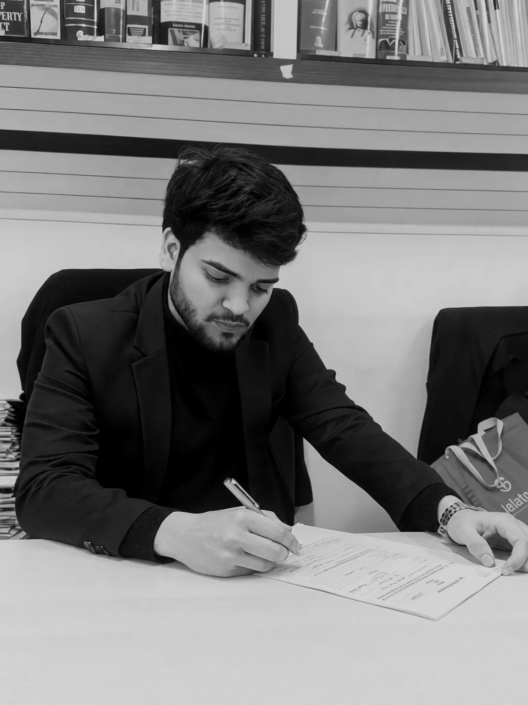

🏛️ UP Court Fee Calculator
Court fee for civil suits and appeals in Uttar Pradesh — Court Fees Act, 1870, Schedule I (ad valorem, uncapped).

Criminal Lawyer · Bulandshahr District Court
Focused criminal-law guidance built on careful preparation, direct communication and respect for every matter entrusted to the practice.
Independent representation and procedural guidance for criminal-law matters.
Daily legal updates
Key Supreme Court and High Court rulings, plus changes in sections and acts — summarised in English and Hindi every morning, with source links to read further.
Updated: —
Summaries are brief explainers, not legal advice. For the complete reasoning, open the linked source article — full judgments are published by the courts and reporting outlets.
Important judgement
Landmark Supreme Court rulings every lawyer should know — summarised in English and Hindi, with a one-tap link to read the complete judgement.
Summaries are brief explainers, not legal advice. Full judgements open on Indian Kanoon, which publishes the complete text of court decisions.
Links Directory
Every judgment source and draft format, linked from here — nothing is copied onto this site, so it stays small. Links open on their own official or publisher site. / हर निर्णय स्रोत और ड्राफ्ट फॉर्मेट का लिंक यहीं से — कुछ भी इस साइट पर कॉपी नहीं किया गया है, इसलिए साइट हल्की रहती है। लिंक उनकी अपनी आधिकारिक या प्रकाशक साइट पर खुलेंगे।
For courts whose official judgments page could not be verified, the link opens an Indian Kanoon search for that court. / जिन न्यायालयों का आधिकारिक निर्णय पृष्ठ सत्यापित नहीं हो सका, उनके लिए Indian Kanoon खोज का लिंक दिया गया है।
Knowledge hub
Bare acts, the Constitution, courts, consumer help, AIBE resources and trusted legal links — in English and Hindi, kept current.
Court fee for civil suits and appeals in Uttar Pradesh — Court Fees Act, 1870, Schedule I (ad valorem, uncapped).
Court fee for civil suits and appeals in Delhi — Court Fees Act, 1870, Schedule I (pre-2012 table, uncapped).
Please enter a valid valuation amount.
Suit valuation:
| Valuation slab | Amount in slab | Rate | Fee |
|---|---|---|---|
| Total at full scale | |||
Half fee applied (Schedule I, Article 2 / 5) — the payable fee is one-half of the full-scale fee.
Total court fee payable:
Indicative only — actual fee as per the current Court Fees Act table applicable in UP; verify before filing.
Source: Court Fees Act, 1870 — Schedules I & II, as applicable in Uttar Pradesh. Read the Act (India Code)
Bare-act PDFs open from official government sources (India Code, Ministry of Home Affairs). Summaries are brief explainers, not legal advice.
Citizen guides
Step-by-step citizen guides — arrest rights, bail, FIR, cyber complaints, anticipatory bail, police inaction, domestic-violence complaints, workplace harassment, senior-citizen protection, consumer complaints, tenant rights, accident claims and RTI — in English and Hindi. / चरण-दर-चरण नागरिक मार्गदर्शिकाएँ — गिरफ्तारी अधिकार, ज़मानत, FIR, साइबर शिकायत, अग्रिम ज़मानत, पुलिस निष्क्रियता, घरेलू हिंसा शिकायत, कार्यस्थल उत्पीड़न, वरिष्ठ नागरिक संरक्षण, उपभोक्ता शिकायत, किरायेदार अधिकार, दुर्घटना दावा व RTI — अंग्रेज़ी व हिंदी में।
When it applies: When the police arrest you, or take you into custody, in any criminal case. / जब पुलिस आपको किसी आपराधिक मामले में गिरफ्तार करे या हिरासत में ले।
Sections cited: BNSS 35(3), BNSS 47, BNSS 53, BNSS 58, Constitution Article 22
When it applies: When you, or someone you know, is arrested or faces arrest in a criminal case and release from custody is sought. / जब आप या आपका कोई परिचित आपराधिक मामले में गिरफ्तार हो या गिरफ्तारी की आशंका हो और हिरासत से रिहाई चाहिए।
Sections cited: BNSS 47, BNSS 478, BNSS 480, BNSS 482, BNSS 483, BNSS 187
When it applies: When a cognizable offence — a serious offence the police can investigate without a court's order — has happened to you or someone you know. / जब आपके या आपके किसी परिचित के साथ कोई संज्ञेय अपराध हुआ हो — यानी ऐसा गंभीर अपराध जिसकी जाँच पुलिस न्यायालय के आदेश के बिना कर सकती है।
Sections cited: BNSS 173, BNSS 174, BNSS 175
When it applies: When money is taken online by fraud, an account is hacked, or someone harasses, blackmails or impersonates you online. / जब ऑनलाइन ठगी से पैसा लिया गया हो, कोई खाता हैक हुआ हो, या कोई ऑनलाइन उत्पीड़न, ब्लैकमेल या फर्ज़ी पहचान से परेशान कर रहा हो।
Sections cited: BNSS 173
When it applies: When you have reason to believe you may be arrested for a non-bailable offence, and you want the court to direct that you be released on bail if arrested. / जब आपको यह मानने का कारण हो कि किसी गैर-ज़मानती अपराध में आपकी गिरफ्तारी हो सकती है, और आप चाहते हैं कि न्यायालय निर्देश दे कि गिरफ्तारी होने पर आपको ज़मानत पर छोड़ा जाए।
Sections cited: BNSS 482, BNSS 480, BNSS 35(3)
When it applies: When the police refuse to register your FIR, or register it but take no visible step, and you need the complaint to move forward lawfully. / जब पुलिस आपकी FIR दर्ज करने से मना करे, या दर्ज करके भी कोई दिखाई देने वाला कदम न उठाए, और आपको शिकायत को कानूनी तरीके से आगे बढ़ाना हो।
Sections cited: BNSS 173, BNSS 175, BNSS 223
When it applies: When a woman in a domestic relationship faces physical, sexual, verbal or emotional, or economic abuse at home. / जब घरेलू संबंध में कोई महिला घर पर शारीरिक, यौन, मौखिक या भावनात्मक, अथवा आर्थिक दुर्व्यवहार का सामना करे।
Where to go: Protection Officer of the district; nearest police station; Judicial Magistrate First Class; registered service provider or shelter home; free legal aid office. / ज़िले के संरक्षण अधिकारी; निकटतम थाना; प्रथम श्रेणी न्यायिक मजिस्ट्रेट; पंजीकृत सेवा प्रदाता या आश्रय गृह; निःशुल्क विधिक सहायता कार्यालय।
Sections cited: DV Act 2005: Sec 4, 5, 9, 12, 17, 18, 19, 20, 21, 22, 23, 31; BNS 85 (where cruelty is also an offence)
When it applies: When a woman faces sexual harassment at her workplace, including an office, factory, school, hospital or any other workplace covered by the POSH Act, 2013. / जब कोई महिला अपने कार्यस्थल — कार्यालय, कारखाना, विद्यालय, अस्पताल या POSH अधिनियम, 2013 के दायरे में आने वाले किसी भी कार्यस्थल — पर यौन उत्पीड़न का सामना करे।
Where to go: Internal Committee of the workplace; Local Committee through the District Officer; nearest police station (for a separate criminal complaint); free legal aid office. / कार्यस्थल की आंतरिक समिति; ज़िला अधिकारी के माध्यम से स्थानीय समिति; निकटतम थाना (अलग आपराधिक शिकायत के लिए); निःशुल्क विधिक सहायता कार्यालय।
Sections cited: POSH Act 2013: Sec 4, 6, 9, 10, 11, 13; BNS 75 (where the conduct is also sexual harassment as an offence — see batch 1 BNS set)
When it applies: When a senior citizen or parent is not being maintained, is abandoned or ill-treated, or faces trouble over property transferred in return for care. / जब किसी वरिष्ठ नागरिक या माता-पिता का भरण-पोषण नहीं हो रहा हो, उन्हें छोड़ दिया गया हो या दुर्व्यवहार हो रहा हो, या देखभाल के बदले हस्तांतरित संपत्ति को लेकर परेशानी हो।
Where to go: Maintenance Tribunal (Sub-Divisional Officer) under the Senior Citizens Act, 2007; nearest police station (for abuse or threats); Judicial Magistrate First Class (BNSS 144 route); free legal aid office. / वरिष्ठ नागरिक अधिनियम, 2007 के तहत भरण-पोषण अधिकरण (उप-खंड अधिकारी); निकटतम थाना (दुर्व्यवहार या धमकी के लिए); प्रथम श्रेणी न्यायिक मजिस्ट्रेट (BNSS 144 का रास्ता); निःशुल्क विधिक सहायता कार्यालय।
Sections cited: Maintenance and Welfare of Parents and Senior Citizens Act, 2007: Sec 4, 5, 9, 23, 24; BNSS 144 (alternative maintenance route)
When it applies: When goods bought or services hired turn out defective or deficient — wrong product, fake product, non-delivery, poor repair, overcharging, or a promised service not given. / जब खरीदा गया माल या ली गई सेवा दोषपूर्ण या कमी वाली निकले — गलत उत्पाद, नकली उत्पाद, डिलीवरी न होना, खराब मरम्मत, अधिक शुल्क, या वादा की गई सेवा न मिलना।
Where to go: Seller's or service provider's grievance officer first; then the District, State or National Consumer Commission according to the value of the claim; free legal aid office. / पहले विक्रेता या सेवा प्रदाता का शिकायत अधिकारी; फिर दावे के मूल्य के अनुसार ज़िला, राज्य या राष्ट्रीय उपभोक्ता आयोग; निःशुल्क विधिक सहायता कार्यालय।
Sections cited: Consumer Protection Act, 2019: Sec 2(6), 34-36, 41, 69, 71 (pecuniary limits and limitation as stated in the site's drafts.json consumer-complaint entry)
When it applies: When a tenant faces an eviction threat, receives a notice to vacate, or cannot get a security deposit back after vacating. / जब किसी किरायेदार को बेदखली की धमकी मिले, खाली करने का नोटिस मिले, या खाली करने के बाद जमा राशि वापस न मिले।
Where to go: Civil court or rent controller / rent authority applicable in your State; nearest police station (for threats or forcible eviction attempts); free legal aid office. / आपके राज्य में लागू सिविल न्यायालय या किराया नियंत्रक / किराया प्राधिकारी; निकटतम थाना (धमकी या बलपूर्वक बेदखली के प्रयास के लिए); निःशुल्क विधिक सहायता कार्यालय।
Sections cited: No single central section is cited on purpose: tenancy procedure and forum vary by State rent law and by whether the tenancy is written or oral. This guide therefore cites no section number rather than a wrong one.
When it applies: When a person is injured, or a family member dies, in a road accident, and compensation or an insurance claim has to be pursued. / जब सड़क दुर्घटना में कोई व्यक्ति घायल हो या किसी परिजन की मृत्यु हो, और प्रतिकर या बीमा दावा करना हो।
Where to go: Nearest police station; hospital where treated; Motor Accident Claims Tribunal having jurisdiction; insurer's grievance office; Insurance Ombudsman; District Consumer Commission (for a consumer complaint against the insurer). / निकटतम थाना; इलाज करने वाला अस्पताल; अधिकारिता वाला मोटर दुर्घटना दावा अधिकरण; बीमाकर्ता का शिकायत कार्यालय; बीमा लोकपाल; ज़िला उपभोक्ता आयोग (बीमाकर्ता के विरुद्ध उपभोक्ता शिकायत के लिए)।
Sections cited: Motor Vehicles Act, 1988: Sec 164 (no-fault interim compensation), 165-166 (MACT claim), 168, 171; BNSS 173 (information to police, where required). No compensation amount is stated: figures change and must be checked at filing.
When it applies: When you need a record, file, decision or status update held by a government department or other public authority. / जब आपको किसी सरकारी विभाग या अन्य लोक प्राधिकारी के पास रखा रिकॉर्ड, फ़ाइल, निर्णय या स्थिति-अद्यतन चाहिए।
Where to go: Public Information Officer of the concerned public authority; First Appellate Authority of that authority; Central Information Commission (for Central authorities) or State Information Commission (for State authorities). / संबंधित लोक प्राधिकारी के जन सूचना अधिकारी; उस प्राधिकारी के प्रथम अपीलीय प्राधिकारी; केंद्रीय सूचना आयोग (केंद्रीय प्राधिकारियों के लिए) या राज्य सूचना आयोग (राज्य प्राधिकारियों के लिए)।
Sections cited: RTI Act, 2005: Sec 6, 6(2), 6(3), 7(1), 7(2), 7(6), 7(8), 18, 19(1), 19(3), 20
When it applies: When you, or someone you know, has been arrested and is in police or judicial custody, and you want to know what happens next and what to watch at each court date. / जब आप या आपका कोई परिचित गिरफ्तार हो गया हो और पुलिस या न्यायिक हिरासत में हो, और आप जानना चाहते हों कि आगे क्या होगा और हर अदालत की तारीख पर क्या देखना है।
Sections cited: BNSS 47, BNSS 58, BNSS 187
When it applies: When a person who is apparently a child (under 18) is apprehended by the police for an alleged offence, and the family wants to know the correct route for bail. / जब कोई व्यक्ति जो देखने में बच्चा हो (18 वर्ष से कम) किसी कथित अपराध में पुलिस द्वारा पकड़ा गया हो, और परिवार ज़मानत का सही रास्ता जानना चाहता हो।
Sections cited: Juvenile Justice (Care and Protection of Children) Act, 2015: Sec 10, Sec 12
When it applies: When money has been taken from your account by online fraud — a fake call, link, app or investment promise — and you want to stop further loss and build a complaint that the police and the bank can act on. / जब ऑनलाइन ठगी से आपके खाते से पैसा ले लिया गया हो — फ़र्ज़ी कॉल, लिंक, ऐप या निवेश के वादे से — और आप और नुकसान रोकना चाहते हों तथा ऐसी शिकायत बनाना चाहते हों जिस पर पुलिस और बैंक कार्रवाई कर सकें।
Sections cited: BNSS 173, BNS 318, IT Act 2000: Sec 66D
When it applies: When a woman faces sexual harassment, stalking, voyeurism, insult to modesty, or cruelty by her husband or his relatives, and wants to complain without losing evidence or safety. / जब कोई महिला यौन उत्पीड़न, पीछा करना, ताक-झाँक, लज्जा भंग करने वाली हरकत, या पति या उसके संबंधियों द्वारा क्रूरता का सामना कर रही हो, और बिना सबूत या सुरक्षा खोए शिकायत करना चाहती हो।
Sections cited: BNSS 173, BNS 72, BNS 74, BNS 75, BNS 85; DV Act 2005: Sec 12, 18, 19, 20
When it applies: When a child has faced a sexual offence, or an adult learns that one may have happened, and the family wants to report it in a way that protects the child. / जब किसी बच्चे के साथ यौन अपराध हुआ हो, या किसी वयस्क को पता चले कि ऐसा हो सकता है, और परिवार बच्चे की सुरक्षा करते हुए शिकायत करना चाहता हो।
Sections cited: POCSO Act, 2012: Sec 19, 21, 23, 24, 28, 33, 35, 36, 37
When it applies: When you face a dispute over land, a house or a boundary — possession taken, boundary moved, papers disputed — and you want to prepare the ground before going to court. / जब ज़मीन, मकान या सीमा को लेकर विवाद हो — कब्ज़ा ले लिया गया हो, सीमा हटा दी गई हो, काग़ज़ों पर विवाद हो — और आप न्यायालय जाने से पहले तैयारी करना चाहते हों।
Sections cited: BNSS 164, BNSS 173, BNS 329(1). No section number is cited for the civil suit and injunction steps on purpose: the civil forum and procedure depend on the nature of the claim and the property, and this guide cites no civil section rather than a wrong one.
When it applies: When you, or your dependent, have suffered loss or injury because of a crime and need rehabilitation, whether or not the offender has been caught. / जब आपको, या आपके आश्रित को, किसी अपराध के कारण हानि या चोट हुई हो और पुनर्वास की ज़रूरत हो, चाहे अपराधी पकड़ा गया हो या नहीं।
Where to go: District Legal Services Authority (DLSA) office in your district; the court hearing your case; free legal aid office. / कहाँ जाएँ: अपने ज़िले का ज़िला विधिक सेवा प्राधिकरण (DLSA) कार्यालय; आपके मामले की सुनवाई करने वाला न्यायालय; निःशुल्क विधिक सहायता कार्यालय।
Sections cited: BNSS 396, BNSS 397
When it applies: When you are a witness in a criminal case and you fear threats, pressure to change your statement, or harm for testifying. / जब आप किसी आपराधिक मामले में गवाह हों और आपको धमकी, बयान बदलने के दबाव, या गवाही देने पर नुकसान का डर हो।
Where to go: Investigating police officer; the court hearing the case; District Legal Services Authority (DLSA) for protection-scheme help. / कहाँ जाएँ: जाँच करने वाला पुलिस अधिकारी; मामले की सुनवाई करने वाला न्यायालय; संरक्षण योजना में मदद के लिए ज़िला विधिक सेवा प्राधिकरण (DLSA)।
Sections cited: BNSS 398
When it applies: When you are facing a criminal case — as accused or victim — and you cannot afford a lawyer, or you belong to a category entitled to free legal services. / जब आप किसी आपराधिक मामले का सामना कर रहे हों — अभियुक्त या पीड़ित के रूप में — और आप वकील का खर्च न उठा सकें, या आप निःशुल्क विधिक सेवा के पात्र वर्ग में आते हों।
Where to go: District Legal Services Authority (DLSA) office in your district; the court hearing your case. / कहाँ जाएँ: अपने ज़िले का ज़िला विधिक सेवा प्राधिकरण (DLSA) कार्यालय; आपके मामले की सुनवाई करने वाला न्यायालय।
Sections cited: BNSS 341, Legal Services Authorities Act, 1987 Sec 12
When it applies: After the police file their report (chargesheet) in a case started on a police report, when you are the accused or the victim and you need the case papers. / जब पुलिस रिपोर्ट (आरोप पत्र) पुलिस रिपोर्ट पर शुरू हुए मामले में दाखिल हो जाए, और आप अभियुक्त या पीड़ित हों और आपको मामले के काग़ज़ चाहिए हों।
Sections cited: BNSS 230, BNSS 193
When it applies: When the police examine you during investigation, or you are asked to give a statement or confession before a Magistrate. / जब पुलिस जाँच के दौरान आपसे पूछताछ करे, या आपसे मजिस्ट्रेट के सामने बयान या इकबालिया बयान देने को कहा जाए।
Sections cited: BNSS 180, BNSS 181, BNSS 183, BSA 23, Constitution Article 20(3)
When it applies: When you receive a summons to appear in court, or you learn that a warrant has been issued against you, in any criminal case. / जब आपको किसी आपराधिक मामले में न्यायालय में उपस्थित होने का समन मिले, या आपको पता चले कि आपके विरुद्ध वारंट जारी हुआ है।
Where to go: The court named on the paper; your lawyer; free legal aid office if you have no lawyer. / कहाँ जाएँ: काग़ज़ पर लिखा न्यायालय; आपका वकील; अगर कोई वकील न हो तो निःशुल्क विधिक सहायता कार्यालय।
Sections cited: (general procedure — no section number stated, to avoid an unverified citation)
When it applies: When a family member, friend or child does not return home, cannot be contacted, and you fear something may have happened to them. / जब कोई परिवारजन, मित्र या बच्चा घर न लौटे, संपर्क न हो पाए, और आपको आशंका हो कि उसके साथ कुछ हुआ हो सकता है।
Sections cited: (general procedure — no section number stated, to avoid an unverified citation)
When it applies: When loan recovery agents call repeatedly, visit your home or workplace, abuse or threaten you or your family, or pressure you to pay on the spot. / जब ऋण वसूली एजेंट बार-बार कॉल करें, घर या कार्यस्थल पर आएँ, आपको या परिवार को गाली दें या धमकाएँ, या मौके पर ही भुगतान का दबाव डालें।
Sections cited: (general procedure — no section number stated, to avoid an unverified citation)
When it applies: When a person from a Scheduled Caste or Scheduled Tribe faces humiliation, abuse, assault, boycott, land-grabbing or threats because of caste, and wants the complaint recorded safely and correctly. / जब अनुसूचित जाति या अनुसूचित जनजाति के किसी व्यक्ति को जाति के कारण अपमान, गाली, मारपीट, बहिष्कार, ज़मीन हड़पने या धमकी का सामना करना पड़े, और वह शिकायत सुरक्षित व सही तरीके से दर्ज कराना चाहे।
Sections cited: (general procedure — no section number stated, to avoid an unverified citation)
When it applies: When your mobile phone is lost or stolen, or an identity document, passbook, certificate or other important paper is lost, and you need to stop misuse and get replacements. / जब आपका मोबाइल फ़ोन खो जाए या चोरी हो जाए, या पहचान पत्र, पासबुक, प्रमाणपत्र या कोई और ज़रूरी काग़ज़ खो जाए, और आपको दुरुपयोग रोकना व दोबारा बनवाना हो।
Sections cited: (general procedure — no section number stated, to avoid an unverified citation)
When it applies: When treatment in a hospital or clinic goes wrong, records are refused, or you believe care was careless, and you want to complain properly without destroying your own case. / जब अस्पताल या क्लिनिक में इलाज ग़लत हो जाए, रिकॉर्ड देने से मना किया जाए, या आपको लगे कि इलाज में लापरवाही हुई, और आप अपना मामला बिगाड़े बिना सही शिकायत करना चाहें।
Sections cited: (general procedure — no section number stated, to avoid an unverified citation)
When it applies: When a family member is in jail — awaiting trial or after sentence — and the family needs to meet them, send money or clothes, follow the case papers, and arrange legal help. / जब कोई परिवारजन जेल में हो — विचाराधीन या सज़ा के बाद — और परिवार को उससे मिलना हो, पैसा या कपड़े भेजने हों, मामले के काग़ज़ों का पीछा करना हो, और कानूनी मदद का इंतज़ाम करना हो।
Sections cited: (general procedure — no section number stated, to avoid an unverified citation)
When it applies: When a cheque you received for money genuinely owed to you is returned unpaid by the bank, and you want to recover the money through the proper complaint route. / जब आपको सच में बकाया धन के लिए मिला चेक बैंक से बिना भुगतान के वापस हो जाए, और आप सही शिकायत मार्ग से धन वसूलना चाहें।
Sections cited: (general procedure — no section number stated, to avoid an unverified citation)
When it applies: When a family member dies suddenly, in an accident, by suicide, or in circumstances that look suspicious or unclear, and the family must deal with the police, the inquest and the post-mortem while grieving. / जब किसी परिवारजन की अचानक, दुर्घटना में, आत्महत्या से, या संदिग्ध या अस्पष्ट परिस्थितियों में मृत्यु हो जाए, और शोक के बीच परिवार को पुलिस, पंचनामा और पोस्टमार्टम से निपटना पड़े।
Sections cited: (general procedure — no section number stated, to avoid an unverified citation)
When it applies: When a public servant, or a middleman acting for one, demands money or a favour to do lawful work — a certificate, a file movement, a licence, a bill — and you want to refuse without harming your work and report it properly. / जब कोई लोक सेवक, या उसके लिए काम करता दलाल, वैध काम — प्रमाणपत्र, फ़ाइल आगे बढ़ाना, लाइसेंस, बिल — के लिए पैसा या एहसान माँगे, और आप अपना काम बिगाड़े बिना इनकार करना व सही शिकायत करना चाहें।
Sections cited: (general procedure — no section number stated, to avoid an unverified citation)
When it applies: When a person has suffered a sexual assault, and the survivor or the family needs medical care, a safe complaint and preserved evidence, without pressure, publicity or blame. / जब किसी व्यक्ति के साथ यौन हमला हुआ हो, और पीड़ित व्यक्ति या परिवार को चिकित्सा देखभाल, सुरक्षित शिकायत और सुरक्षित सबूत चाहिए हों — बिना दबाव, प्रचार या दोष के।
Sections cited: (general procedure — no section number stated, to avoid an unverified citation)
When it applies: When your two-wheeler, car or other vehicle is stolen, and you need a proper police report, an insurance claim and clean papers, without paying middlemen or buying the vehicle back from thieves. / जब आपका दोपहिया, कार या अन्य वाहन चोरी हो जाए, और आपको सही पुलिस रिपोर्ट, बीमा दावा और साफ़ काग़ज़ चाहिए हों — बिना दलालों को भुगतान किए या चोरों से वाहन वापस खरीदे।
Sections cited: (general procedure — no section number stated, to avoid an unverified citation)
When it applies: When one parent takes a child away without agreement — from school, from home, or after a visit — and the other parent needs to protect the child and start the lawful custody route without a physical fight over the child. / जब एक माता-पिता बिना सहमति के बच्चे को ले जाए — स्कूल से, घर से, या मुलाक़ात के बाद — और दूसरे माता-पिता को बिना बच्चे पर शारीरिक झगड़े के बच्चे की सुरक्षा करनी हो और वैध अभिरक्षा मार्ग शुरू करना हो।
Sections cited: (general procedure — no section number stated, to avoid an unverified citation)
When it applies: When your salary is delayed or unpaid, or you are removed from a job suddenly without a proper reason or notice. / जब आपका वेतन देर से मिले या न मिले, या आपको बिना सही कारण या नोटिस के अचानक नौकरी से हटा दिया जाए।
Sections cited: (general procedure — no section number stated, to avoid an unverified citation)
When it applies: When a marriage has broken down and you need to understand the lawful route for divorce and for maintenance for yourself or your children. / जब विवाह टूट गया हो और आपको तलाक तथा अपने या अपने बच्चों के भरण-पोषण का कानूनी रास्ता समझना हो।
Sections cited: (general procedure — no section number stated, to avoid an unverified citation)
When it applies: When a family member has died and the family needs to deal with the will, bank accounts, property and the shares of the legal heirs. / जब किसी परिवारजन की मृत्यु हो गई हो और परिवार को वसीयत, बैंक खातों, संपत्ति व कानूनी वारिसों के हिस्सों का काम निपटाना हो।
Sections cited: (general procedure — no section number stated, to avoid an unverified citation)
When it applies: When false posts, morphed photos, abusive messages or fake accounts are used to damage your reputation or harass you online. / जब झूठी पोस्ट, बदली हुई फ़ोटो, गाली-गलौज वाले संदेश या फ़र्ज़ी खातों से आपकी छवि खराब की जाए या आपको ऑनलाइन परेशान किया जाए।
Sections cited: (general procedure — no section number stated, to avoid an unverified citation)
When it applies: When the traffic police stop you, issue a challan, or seize your driving licence or vehicle, and you need to handle it correctly. / जब ट्रैफिक पुलिस आपको रोके, चालान काटे, या आपका ड्राइविंग लाइसेंस या वाहन ज़ब्त करे, और आपको इसे सही तरीके से निपटाना हो।
Sections cited: (general procedure — no section number stated, to avoid an unverified citation)
When it applies: When a dispute with a neighbour over noise, water, parking, a common area or a boundary starts affecting your daily life. / जब शोर, पानी, पार्किंग, साझा जगह या सीमा को लेकर पड़ोसी से विवाद आपकी रोज़मर्रा की ज़िंदगी को प्रभावित करने लगे।
Sections cited: (general procedure — no section number stated, to avoid an unverified citation)
When it applies: When police officers come to search your home, whether or not they carry a search warrant. / जब पुलिस अधिकारी आपके घर की तलाशी लेने आएँ, चाहे उनके पास तलाशी वारंट हो या न हो।
Sections cited: (general procedure — no section number stated, to avoid an unverified citation)
When it applies: When you have a case pending in any court and want to know the next date, the latest order, or what stage the case is at. / जब आपका कोई मामला किसी न्यायालय में लंबित हो और आप अगली तारीख, ताज़ा आदेश या मामले की अवस्था जानना चाहते हों।
Sections cited: (general procedure — no section number stated, to avoid an unverified citation)
When it applies: When you suspect someone has used your Aadhaar number, or your Aadhaar details, photograph or mobile number linked to it, are wrong. / जब आपको लगे कि किसी ने आपके आधार नंबर का इस्तेमाल किया है, या आपके आधार विवरण, फ़ोटो या उससे जुड़ा मोबाइल नंबर गलत है।
Sections cited: (general procedure — no section number stated, to avoid an unverified citation)
When it applies: When your name, your father's name, the area, or the type of land shown in the revenue record does not match your sale deed, inheritance papers or identity documents. / जब राजस्व रिकॉर्ड में आपका नाम, पिता का नाम, क्षेत्रफल या भूमि का प्रकार आपकी बिक्री पत्र, उत्तराधिकार काग़ज़ों या पहचान दस्तावेज़ों से मेल न खाता हो।
Sections cited: (general procedure — no section number stated, to avoid an unverified citation)
When it applies: When you need a caste, income or domicile certificate for admission, a scholarship, a job, or a government scheme, or when your application has been rejected or delayed. / जब आपको प्रवेश, छात्रवृत्ति, नौकरी या सरकारी योजना के लिए जाति, आय या निवास प्रमाण पत्र चाहिए, या आपका आवेदन खारिज हो गया हो या अटका हो।
Sections cited: (general procedure — no section number stated, to avoid an unverified citation)
When it applies: When your electricity or water bill is far higher than your usual use, shows a wrong meter reading, or when your connection has been disconnected over a disputed bill. / जब आपका बिजली या पानी का बिल सामान्य उपयोग से कहीं ज़्यादा हो, गलत मीटर रीडिंग दिखाए, या विवादित बिल पर आपका कनेक्शन काट दिया गया हो।
Sections cited: (general procedure — no section number stated, to avoid an unverified citation)
General information only — not legal advice. For your own case, speak to a lawyer with your papers. / यह केवल सामान्य जानकारी है — किसी विशेष मामले के लिए कानूनी सलाह नहीं है। अपने मामले के लिए अपने कागज़ों के साथ किसी वकील से बात करें।
Legal resources
Unlock the library, then choose between 10000+ LEGAL DRAFTS and Legal Formats. Files remain hosted in Google Drive and can be opened or downloaded through Drive’s controls.
Enter the document password to open both Drive libraries.
Basic client-side protectionThis gate is not server authentication. Google Drive sharing permissions remain the real access control; do not place confidential client files in publicly shared folders.
Password hint:
This is a static website, so email-based password reset is not available. The owner must update the password hash and hint in SETTINGS.
Legal drafts
Original draft templates for common criminal, civil, family and cheque-bounce matters — in standard court format with fill-in placeholders. Download any draft as a text file or print it directly.
No drafts match your search.
Draft templates are general formats for guidance only, not legal advice. Details, court names, dates and facts must be filled in carefully before filing — consult an advocate for your specific matter.
Quick reference
A compact guide to every draft — what it is used for, the sections it relies on, where it is filed, and what you need. Tap any card to jump to the full draft template.
No entries match your search.
This guide summarises each draft for quick reference only. Always check the full draft template and consult an advocate before filing.
Everyday documents
Everyday documents like Aadhaar, PAN and passport: when, where and why each one is used, with its official source.
This information is for general guidance only. Rules for state-issued certificates can vary by state, so check the portal of your state before applying.
Unauthorised access, interference, impersonation, fraud, or misuse of this website and its materials may attract civil or criminal consequences under applicable Indian law.
This notice is general information, not a finding that any offence has occurred. The sections and remedies that apply depend on the facts and current law.
Analysis
The New Criminal Codes: What Actually Changed — and What Did Not · नई आपराधिक संहिताएँ: वास्तव में क्या बदला — और क्या नहीं बदला
On 1 July 2024, India's three old criminal codes stopped being the codes for new cases: the Indian Penal Code of 1860, the Code of Criminal Procedure of 1973, and the Indian Evidence Act of 1872 were replaced by the Bharatiya Nyaya Sanhita (BNS), the Bharatiya Nagarik Suraksha Sanhita (BNSS) and the Bharatiya Sakshya Adhiniyam (BSA). The change was not a small renumbering exercise. It was a decision to rewrite the language of criminal law in one stroke, and every lawyer, police officer and citizen who deals with a criminal case has had to learn new numbers for old ideas.
1 जुलाई 2024 को भारत की तीन पुरानी आपराधिक संहिताएँ नए मामलों के लिए संहिताएँ नहीं रहीं: 1860 की भारतीय दण्ड संहिता, 1973 की दण्ड प्रक्रिया संहिता और 1872 का भारतीय साक्ष्य अधिनियम — इनकी जगह भारतीय न्याय संहिता (BNS), भारतीय नागरिक सुरक्षा संहिता (BNSS) और भारतीय साक्ष्य अधिनियम (BSA) आ गए। यह बदलाव छोटा नंबर-बदलना नहीं था। यह एक ही झटके में आपराधिक कानून की भाषा फिर से लिखने का निर्णय था, और आपराधिक मामले से जुड़े हर वकील, पुलिस अधिकारी और नागरिक को पुरानी बातों के लिए नए नंबर सीखने पड़े हैं।
The first thing to understand is how much did not change. Murder is still murder, theft is still theft, and cheating is still cheating. The definitions were carried over in substance, and the trial still moves through the same broad stages: information to the police, investigation, charge, evidence, and judgment. Anyone who says the whole criminal law was turned upside down is exaggerating. What changed, for most offences, is the section number you write on the paper — IPC 302 became BNS 103(1), CrPC 154 became BNSS 173, and the Evidence Act's section 3 became BSA 2.
पहली बात यह समझनी है कि कितना कुछ नहीं बदला। हत्या अब भी हत्या है, चोरी अब भी चोरी है, और छल अब भी छल है। परिभाषाएँ सार रूप में वही रखी गई हैं, और मुकदमा अब भी उन्हीं मोटे चरणों से गुज़रता है: पुलिस को सूचना, जाँच, आरोप, साक्ष्य और निर्णय। जो कोई कहे कि पूरा आपराधिक कानून उल्टा कर दिया गया, वह अतिशयोक्ति कर रहा है। अधिकांश अपराधों के लिए जो बदला है, वह काग़ज़ पर लिखा जाने वाला धारा नंबर है — IPC 302 अब BNS 103(1) हो गई, CrPC 154 अब BNSS 173 हो गई, और साक्ष्य अधिनियम की धारा 3 अब BSA 2 हो गई।
The second thing is what genuinely is new, and here the new codes deserve attention rather than dismissal. BNS gives organised crime (section 111), petty organised crime (112) and a terrorist act (113) their own sections in the main code, instead of leaving them to be borrowed from special laws. It names snatching (304) as an offence of its own. And it separately punishes murder by a group on grounds of race, caste, community, sex, language or personal belief (103(2)) — the provision commonly described as the mob-lynching provision. These are not renumberings; they are subjects the old IPC did not name in this way.
दूसरी बात यह है कि वास्तव में नया क्या है, और यहाँ नए संहिताओं पर ध्यान देना बनता है, न कि उन्हें खारिज़ करना। BNS संगठित अपराध (धारा 111), छोटे संगठित अपराध (112) और आतंकवादी कृत्य (113) को विशेष कानूनों से उधार लेने के बजाय मुख्य संहिता में अपनी धाराएँ देती है। वह छीनाझपटी (304) को अपना अलग अपराध बनाती है। और वह नस्ल, जाति, समुदाय, लिंग, भाषा या व्यक्तिगत विश्वास के आधार पर समूह द्वारा हत्या (103(2)) को अलग से दण्डित करती है — यह वह प्रावधान है जिसे आमतौर पर मॉब-लिंचिंग प्रावधान कहा जाता है। ये केवल नंबर बदलना नहीं हैं; ये वे विषय हैं जिन्हें पुरानी IPC ने इस तरह नाम नहीं दिया था।
The third change is subtler, and it matters most to ordinary people: the new codes take electronic life seriously. An FIR can now be sent by electronic communication, and the BSA's rule on electronic records (section 63, old Evidence Act section 65B) — with its certificate requirement — sits at the centre of almost every modern case, from a screenshot in a cheating case to call records in a criminal trial. A citizen who keeps original messages, unedited screenshots and transaction records is no longer being merely careful; under the new framework, that habit is often the evidence itself.
तीसरा बदलाव सूक्ष्म है, और आम लोगों के लिए सबसे ज़्यादा मायने रखता है: नई संहिताएँ इलेक्ट्रॉनिक जीवन को गंभीरता से लेती हैं। FIR अब इलेक्ट्रॉनिक संचार से भी भेजी जा सकती है, और BSA का इलेक्ट्रॉनिक अभिलेखों पर नियम (धारा 63, पुरानी साक्ष्य अधिनियम की धारा 65B) — उसके प्रमाणपत्र की आवश्यकता सहित — लगभग हर आधुनिक मामले के केंद्र में है, छल के मामले के स्क्रीनशॉट से लेकर आपराधिक मुकदमे के कॉल रिकॉर्ड तक। जो नागरिक मूल संदेश, बिना संपादन वाले स्क्रीनशॉट और लेन-देन रिकॉर्ड संभालकर रखता है, वह अब केवल सावधान नहीं है; नई व्यवस्था में वह आदत अक्सर स्वयं साक्ष्य ही है।
There is also a change in the opposite direction, which is worth stating plainly because it is often misreported. The named offence of sedition under IPC 124A is gone. Its subject is covered in a new form by BNS 152, dealing with acts endangering the sovereignty, unity and integrity of India. That is not the same as saying the subject disappeared, and it is not the same as saying the old offence was simply renamed. Both claims are heard in public debate, and both are wrong. The honest description is: old name gone, new provision in a new form, and the courts will decide, case by case, where its boundaries lie.
एक विपरीत दिशा का बदलाव भी है, जिसे साफ़-साफ़ कहना ज़रूरी है क्योंकि इसके बारे में अक्सर गलत ख़बर फैलती है। IPC 124A के तहत राजद्रोह नामक अपराध समाप्त हो गया है। उसका विषय नए रूप में BNS 152 में है, जो भारत की संप्रभुता, एकता व अखंडता को खतरे में डालने वाले कार्यों से संबंधित है। यह कहना कि विषय ही गायब हो गया, सही नहीं है, और यह कहना भी सही नहीं है कि पुराने अपराध का केवल नाम बदल दिया गया। सार्वजनिक बहस में दोनों दावे सुनाई देते हैं, और दोनों गलत हैं। ईमानदार वर्णन यह है: पुराना नाम गया, नया प्रावधान नए रूप में आया, और इसकी सीमाएँ अदालतें मामले-दर-मामले तय करेंगी।
For a citizen, the practical lesson is simple and unsentimental. When you read a news report or a police paper, check the date: a case that began before 1 July 2024 will still be argued in the language of its own time, and a new case will be written in BNS, BNSS and BSA numbers. If a paper cites an old number for a new case, or a new number for an old one, ask your lawyer to check it before you sign or rely on it. A wrong section number does not always change the outcome, but it is exactly the kind of small error that causes delay, confusion and needless rounds of correction.
एक नागरिक के लिए व्यावहारिक सबक सरल और बिना भावुकता के है। जब आप कोई समाचार या पुलिस काग़ज़ पढ़ें तो तारीख देखें: 1 जुलाई 2024 से पहले शुरू हुआ मामला अपनी ही समय की भाषा में बहस होगा, और नया मामला BNS, BNSS व BSA नंबरों में लिखा जाएगा। अगर किसी काग़ज़ में नए मामले के लिए पुराना नंबर, या पुराने मामले के लिए नया नंबर लिखा हो तो हस्ताक्षर करने या उस पर भरोसा करने से पहले अपने वकील से जाँच करवाएँ। गलत धारा नंबर हमेशा परिणाम नहीं बदलता, पर यह ठीक उसी तरह की छोटी गलती है जिससे देरी, भ्रम और सुधार के बेवजह चक्कर लगते हैं।
For the system, the real test has only just begun. New codes are easy to announce and hard to absorb: police stations must record the right sections, courts must apply the right procedure, and law students must unlearn numbers they memorised for years. The early years will produce mistakes — a wrong cross-reference here, a missed new provision there — and the measure of the reform will be how quickly those mistakes are caught and corrected, not whether they happen at all. That is why a public, bilingual, section-by-section comparison matters more than any speech about the new codes: it lets a citizen check, in her own language, whether the number on her paper means what she thinks it means.
व्यवस्था के लिए असली परीक्षा अभी शुरू हुई है। नई संहिताओं की घोषणा आसान है, उन्हें आत्मसात करना कठिन: थानों को सही धाराएँ दर्ज करनी हैं, न्यायालयों को सही प्रक्रिया लागू करनी है, और कानून के छात्रों को वर्षों से याद किए नंबर भुलाने हैं। शुरुआती वर्षों में गलतियाँ होंगी — कहीं गलत क्रॉस-रेफ़रेंस, कहीं कोई नया प्रावधान छूटना — और सुधार की कसौटी यह होगी कि वे गलतियाँ कितनी जल्दी पकड़ी व सुधारी जाती हैं, न कि यह कि वे होती हैं या नहीं। इसीलिए नई संहिताओं पर किसी भाषण से ज़्यादा एक सार्वजनिक, द्विभाषी, धारा-दर-धारा तुलना मायने रखती है: वह नागरिक को अपनी ही भाषा में यह जाँचने देती है कि उसके काग़ज़ पर लिखा नंबर वही अर्थ रखता है जो वह समझ रही है।
The bottom line is deliberately modest. The new criminal codes did not reinvent justice, and they did not abolish it either. They tidied a 19th-century code, gave names to a few modern crimes, rewrote procedure and evidence for an electronic age, and changed the numbers under which every criminal case is now filed. Citizens do not need to memorise all 358 sections of the BNS. They need three habits: note the date of their case, check the section number on every paper, and keep their own records. Those three habits will protect them under any code, old or new.
निष्कर्ष जानबूझकर विनम्र है। नई आपराधिक संहिताओं ने न तो न्याय को नए सिरे से गढ़ा है, न उसे समाप्त किया है। उन्होंने 19वीं सदी की संहिता को व्यवस्थित किया है, कुछ आधुनिक अपराधों को नाम दिए हैं, प्रक्रिया व साक्ष्य को इलेक्ट्रॉनिक युग के लिए फिर से लिखा है, और हर आपराधिक मामले के दाखिल होने वाले नंबर बदल दिए हैं। नागरिकों को BNS की सभी 358 धाराएँ याद करने की ज़रूरत नहीं है। उन्हें तीन आदतें चाहिए: अपने मामले की तारीख नोट करना, हर काग़ज़ पर धारा नंबर जाँचना, और अपने रिकॉर्ड खुद संभालकर रखना। ये तीन आदतें किसी भी संहिता में — पुरानी हो या नई — उनकी रक्षा करेंगी।
Bail Law: What Courts Actually Weigh, and What Families Should Do First · ज़मानत कानून: न्यायालय वास्तव में क्या तौलते हैं, और परिवारों को पहले क्या करना चाहिए
Bail is the most misunderstood word in criminal law. For the ordinary person it sounds like freedom, and for the complainant it often sounds like the accused escaping. In law it is neither. Bail is a conditional release from custody while the case continues; it is not an acquittal, and it does not decide whether the accused is guilty. The trial goes on, the accused must appear on every date, and the court can cancel bail if its conditions are broken.
ज़मानत आपराधिक कानून का सबसे गलत समझा जाने वाला शब्द है। आम आदमी के लिए यह स्वतंत्रता जैसी लगती है, और शिकायतकर्ता के लिए अक्सर ऐसा लगता है कि आरोपी बच निकला। कानून में यह दोनों नहीं है। ज़मानत मुकदमा चलते रहने के दौरान हिरासत से सशर्त रिहाई है; यह दोषमुक्ति नहीं है, और इससे यह तय नहीं होता कि आरोपी दोषी है या नहीं। मुकदमा चलता रहता है, आरोपी को हर तारीख को उपस्थित होना होता है, और शर्तें टूटें तो न्यायालय ज़मानत रद्द कर सकता है।
The starting point is simple, and it is worth stating plainly: in bailable offences, bail is to be taken (BNSS 478). The police or the court cannot treat a bailable offence as if it were non-bailable. In non-bailable offences, bail is a matter for the court under BNSS 480, and for a person already in custody, the regular bail application goes to the Sessions Court or the High Court (BNSS 483). Anticipatory bail, for a person who fears arrest, is a separate route under BNSS 482. Knowing which of these three doors applies is half the work.
शुरुआती बात सरल है, और इसे साफ़ कहना ज़रूरी है: ज़मानती अपराधों में ज़मानत लेनी होती है (BNSS 478)। पुलिस या न्यायालय ज़मानती अपराध को गैर-ज़मानती जैसा नहीं मान सकते। गैर-ज़मानती अपराधों में ज़मानत न्यायालय का विषय है (BNSS 480), और हिरासत में मौजूद व्यक्ति के लिए नियमित ज़मानत आवेदन सत्र न्यायालय या उच्च न्यायालय में जाता है (BNSS 483)। गिरफ्तारी का डर रखने वाले व्यक्ति के लिए अग्रिम ज़मानत BNSS 482 के तहत अलग रास्ता है। इन तीन में से कौन सा द्वार लागू होता है, यह जानना आधा काम है।
What courts actually weigh is narrower than public debate suggests. They ask whether the accused is likely to appear, whether witnesses or evidence are likely to be tampered with, whether the accused is likely to commit further offences while on bail, and how serious the allegation is. A long list of past cases, a risk of flight, or a real chance of influencing witnesses weighs against bail; a fixed residence, family ties, a clean record and a long period already spent in custody weigh in favour. The court does not decide the whole case at the bail stage, and it should not record findings that would prejudice the trial.
न्यायालय वास्तव में जिन बातों को तौलते हैं, वे सार्वजनिक बहस से कहीं सीमित हैं। वे पूछते हैं कि क्या आरोपी के उपस्थित होने की संभावना है, क्या गवाहों या साक्ष्य से छेड़छाड़ की संभावना है, क्या ज़मानत पर रहते हुए आरोपी के और अपराध करने की संभावना है, और आरोप कितना गंभीर है। पुराने मामलों की लंबी सूची, भागने का जोखिम, या गवाहों को प्रभावित करने की वास्तविक संभावना ज़मानत के विरुद्ध जाती है; स्थायी निवास, पारिवारिक संबंध, स्वच्छ रिकॉर्ड और हिरासत में बिताया लंबा समय ज़मानत के पक्ष में जाता है। न्यायालय ज़मानत के चरण में पूरा मामला तय नहीं करता, और उसे ऐसे निष्कर्ष दर्ज नहीं करने चाहिए जो विचारण को प्रभावित करें।
Default bail is the provision ordinary people most often miss, and it matters enormously. If the investigation is not completed and the chargesheet is not filed within the period allowed for police custody and remand under BNSS 187, the accused becomes entitled to default bail on furnishing bail. This is not a favour and not a technical trick: it is the law's answer to the question of how long a person can be kept in custody without a chargesheet. Families should therefore always note the date of arrest and ask, at each remand, whether the chargesheet has been filed.
डिफ़ॉल्ट ज़मानत वह प्रावधान है जिसे आम लोग सबसे ज़्यादा चूकते हैं, और यह बेहद महत्वपूर्ण है। अगर BNSS 187 के तहत पुलिस हिरासत और रिमांड के लिए अनुमत अवधि में अन्वेषण पूरा न हो और आरोप पत्र दाखिल न हो, तो ज़मानत प्रस्तुत करने पर आरोपी डिफ़ॉल्ट ज़मानत का हकदार हो जाता है। यह कोई कृपा नहीं है और कोई तकनीकी चाल नहीं है: यह इस प्रश्न का कानून का उत्तर है कि बिना आरोप पत्र के किसी व्यक्ति को कितने समय तक हिरासत में रखा जा सकता है। इसलिए परिवारों को हमेशा गिरफ्तारी की तारीख नोट करनी चाहिए और हर रिमांड पर पूछना चाहिए कि आरोप पत्र दाखिल हुआ है या नहीं।
Bail conditions are where cases are won and lost in practice. Courts commonly require a personal bond, sureties, surrender of passport, regular appearance before the police or the court, and a direction not to contact witnesses or leave the jurisdiction without permission. These conditions are not punishments, but breaking them is the fastest route to cancellation. The practical advice is unglamorous but decisive: keep the bail papers safe, note every condition in writing, and comply with each one exactly, even when it feels inconvenient.
ज़मानत की शर्तें ही वह जगह हैं जहाँ व्यवहार में मामले बनते-बिगड़ते हैं। न्यायालय आमतौर पर वैयक्तिक बंधपत्र, प्रतिभू, पासपोर्ट समर्पण, पुलिस या न्यायालय के समक्ष नियमित उपस्थिति, और गवाहों से संपर्क न करने या अनुमति के बिना अधिकारिता से बाहर न जाने का निर्देश देते हैं। ये शर्तें दण्ड नहीं हैं, लेकिन इन्हें तोड़ना रद्दीकरण का सबसे तेज़ रास्ता है। व्यावहारिक सलाह आकर्षक नहीं है पर निर्णायक है: ज़मानत काग़ज़ सुरक्षित रखें, हर शर्त लिखित में नोट करें, और असुविधाजनक लगने पर भी हर शर्त का ठीक-ठीक पालन करें।
Delay has become a central argument in bail hearings, and rightly so. When a trial is unlikely to conclude soon, and the accused has already spent a long time in custody, courts increasingly treat continued detention as itself a reason to consider release, particularly where the maximum punishment is not extreme and the evidence is largely documentary. This is not a rule that every undertrial must be released after a fixed period; it is a weighing exercise in which delay, custody already undergone, and the nature of the case are balanced together.
ज़मानत सुनवाइयों में देरी अब केंद्रीय तर्क बन गई है, और सही भी है। जब विचारण के जल्द समाप्त होने की संभावना न हो, और आरोपी पहले ही लंबा समय हिरासत में बिता चुका हो, तो न्यायालय निरंतर हिरासत को ही रिहाई पर विचार का कारण मानने लगे हैं, विशेषकर जहाँ अधिकतम दण्ड अत्यधिक न हो और साक्ष्य अधिकतर दस्तावेज़ी हो। यह कोई नियम नहीं है कि हर विचाराधीन कैदी को नियत अवधि के बाद छोड़ ही देना चाहिए; यह एक संतुलन है जिसमें देरी, पहले से बिताई हिरासत और मामले की प्रकृति को एक साथ तौला जाता है।
For a family facing arrest, the sequence is therefore practical, not theoretical. Find out at once whether the offence is bailable or non-bailable; note the date and time of arrest; ask at every remand whether the chargesheet has been filed; prepare sureties and identity papers before the hearing rather than after it; and read the bail order's conditions aloud together before leaving the court. Bail law rewards preparation and punishes delay — and in most cases, the family that arrives with papers ready is the family that gets its member home.
गिरफ्तारी का सामना कर रहे परिवार के लिए क्रम इसलिए व्यावहारिक है, सैद्धांतिक नहीं। तुरंत पता करें कि अपराध ज़मानती है या गैर-ज़मानती; गिरफ्तारी की तारीख और समय नोट करें; हर रिमांड पर पूछें कि आरोप पत्र दाखिल हुआ है या नहीं; सुनवाई के बाद नहीं, पहले ही प्रतिभू और पहचान पत्र तैयार रखें; और न्यायालय छोड़ने से पहले ज़मानत आदेश की शर्तें एक साथ ज़ोर से पढ़ लें। ज़मानत कानून तैयारी को पुरस्कृत करता है और देरी को दंडित करता है — और अधिकांश मामलों में, काग़ज़ तैयार लेकर पहुँचने वाला परिवार ही अपने सदस्य को घर लाता है।
Digital Evidence in Everyday Cases: Originals, Certificates and CCTV · रोज़मर्रा के मामलों में डिजिटल साक्ष्य: मूल प्रति, प्रमाणपत्र और सीसीटीवी
Almost every criminal case today contains a piece of digital evidence: a WhatsApp chat, a CCTV clip, a call record, a photograph, or a location trail on a phone. Ten years ago these were supporting material; today they are often the case itself. Yet the way people handle them has not kept pace with their importance. Screenshots are forwarded, originals are deleted, and phones are reset — and by the time the matter reaches court, the most important evidence is the hardest to prove.
आज लगभग हर आपराधिक मामले में कोई न कोई डिजिटल साक्ष्य होता है: व्हाट्सऐप चैट, सीसीटीवी क्लिप, कॉल रिकॉर्ड, फ़ोटो, या फ़ोन पर स्थान का रिकॉर्ड। दस वर्ष पहले ये सहायक सामग्री थे; आज ये अक्सर स्वयं मामला होते हैं। फिर भी लोगों के इन्हें संभालने का तरीका इनके महत्व के साथ नहीं बढ़ा है। स्क्रीनशॉट आगे भेज दिए जाते हैं, मूल प्रति हटा दी जाती है, और फ़ोन रीसेट कर दिए जाते हैं — और जब मामला न्यायालय पहुँचता है, तब सबसे महत्वपूर्ण साक्ष्य को साबित करना सबसे कठिन होता है।
The Bharatiya Sakshya Adhiniyam, 2023 (BSA) treats electronic and digital records as a normal part of evidence, not as an exception. The original document is primary evidence under BSA 57, and electronic or digital records are dealt with in BSA 61 to 63. The key provision is BSA 63, on admissibility of electronic records: an electronic record is not to be rejected merely because it is electronic, but its production must meet the conditions in that section, including the certificate that section requires. A printout without that foundation is vulnerable in a way the original on the device is not.
भारतीय साक्ष्य अधिनियम, 2023 (BSA) इलेक्ट्रॉनिक और डिजिटल रिकॉर्ड को साक्ष्य का सामान्य हिस्सा मानता है, अपवाद नहीं। मूल दस्तावेज़ BSA 57 के तहत प्राथमिक साक्ष्य है, और इलेक्ट्रॉनिक या डिजिटल रिकॉर्ड BSA 61 से 63 में दिए गए हैं। मुख्य प्रावधान BSA 63 है, जो इलेक्ट्रॉनिक रिकॉर्ड की ग्राह्यता पर है: इलेक्ट्रॉनिक रिकॉर्ड को केवल इसलिए खारिज नहीं किया जा सकता कि वह इलेक्ट्रॉनिक है, लेकिन उसे प्रस्तुत करने के लिए उस धारा की शर्तें पूरी होनी चाहिए, जिसमें उस धारा द्वारा अपेक्षित प्रमाणपत्र भी है। बिना उस आधार के प्रिंटआउट उस तरह कमज़ोर है जैसा उपकरण पर मौजूद मूल प्रति नहीं है।
The first practical rule follows directly: preserve the original. Do not edit, crop, forward-and-delete, or 'clean up' a chat, photo or video that may be evidence. Keep the phone or device itself safe, do not reset it, and keep the original file with its date and time intact. A forwarded screenshot proves, at best, that a screenshot exists; the original message on the original device, with its metadata, proves what was actually sent and received. Courts distinguish between these two things, and so should citizens.
पहला व्यावहारिक नियम सीधे इससे निकलता है: मूल प्रति सुरक्षित रखें। किसी चैट, फ़ोटो या वीडियो को, जो साक्ष्य हो सकता है, संपादित न करें, काटें नहीं, आगे भेजकर हटाएँ नहीं, या 'साफ़' न करें। फ़ोन या उपकरण को सुरक्षित रखें, उसे रीसेट न करें, और मूल फ़ाइल को उसकी तारीख और समय सहित intact रखें। आगे भेजा गया स्क्रीनशॉट, अधिक से अधिक, यह साबित करता है कि एक स्क्रीनशॉट मौजूद है; मूल उपकरण पर मूल संदेश, अपने मेटाडेटा सहित, यह साबित करता है कि वास्तव में क्या भेजा और प्राप्त हुआ। न्यायालय इन दोनों में अंतर करते हैं, और नागरिकों को भी करना चाहिए।
The second rule concerns how electronic evidence is proved. Under BSA 63, the certificate is not a formality to be arranged at the last minute; it connects the record to the device and the process that produced it. A lawyer should therefore be told about digital evidence at the first meeting, not at the trial stage, so that the certificate and the device can be arranged while both are still available. Evidence that is easy to collect on the first day is often impossible to reconstruct a year later.
दूसरा नियम इस बात से जुड़ा है कि इलेक्ट्रॉनिक साक्ष्य कैसे साबित होता है। BSA 63 के तहत प्रमाणपत्र अंतिम समय में पूरी की जाने वाली औपचारिकता नहीं है; यह रिकॉर्ड को उपकरण और उसे उत्पन्न करने वाली प्रक्रिया से जोड़ता है। इसलिए वकील को डिजिटल साक्ष्य के बारे में पहली ही मुलाकात में बताना चाहिए, विचारण के चरण में नहीं, ताकि प्रमाणपत्र और उपकरण दोनों उपलब्ध रहते हुए व्यवस्थित किए जा सकें। पहले दिन आसानी से जुटाया जा सकने वाला साक्ष्य एक वर्ष बाद अक्सर पुनः बनाना असंभव होता है।
CCTV footage deserves a separate warning. It is routinely overwritten within days or weeks, and a request made a month later often finds nothing left to preserve. If an incident is captured on a camera — at a shop, a bank, a housing society or a public place — a written request for preservation should go to the camera's owner and to the police immediately, with the date and approximate time stated. The same urgency applies to call records and tower-location data held by service providers, which are obtained through the investigation, not by private request.
सीसीटीवी फुटेज के लिए अलग चेतावनी ज़रूरी है। यह आमतौर पर कुछ दिन या सप्ताह में overwrite हो जाती है, और एक महीने बाद किया गया अनुरोध अक्सर कुछ भी सुरक्षित नहीं पाता। अगर कोई घटना कैमरे में कैद हुई है — दुकान, बैंक, आवास समिति या सार्वजनिक स्थान पर — तो संरक्षण के लिए लिखित अनुरोध कैमरे के स्वामी और पुलिस को तुरंत भेजना चाहिए, जिसमें तारीख और अनुमानित समय लिखा हो। यही तत्परता सेवा प्रदाताओं के पास मौजूद कॉल रिकॉर्ड और टावर-स्थान डेटा पर भी लागू होती है, जो निजी अनुरोध से नहीं, अन्वेषण के माध्यम से प्राप्त होते हैं।
There is also a limit that citizens should understand. Not everything on a phone is admissible merely because it exists, and not everything obtained improperly becomes usable because it is true. The BSA's rules on relevancy (BSA 3: evidence may be given of facts in issue and relevant facts) still apply, and material that is irrelevant, or that proves nothing about the fact in issue, adds bulk without adding proof. Collecting everything is not a strategy; collecting the right thing, in its original form, is.
एक सीमा भी है जिसे नागरिकों को समझना चाहिए। फ़ोन पर मौजूद हर चीज़ केवल इसलिए ग्राह्य नहीं हो जाती कि वह मौजूद है, और अनुचित तरीके से प्राप्त हर चीज़ केवल इसलिए उपयोगी नहीं हो जाती कि वह सच है। BSA के सुसंगति नियम (BSA 3: विवाद्यक तथ्यों और सुसंगत तथ्यों का साक्ष्य दिया जा सकता है) अब भी लागू होते हैं, और जो सामग्री असंगत है, या विवाद्यक तथ्य के बारे में कुछ साबित नहीं करती, वह प्रमाण बढ़ाए बिना बोझ बढ़ाती है। सब कुछ इकट्ठा करना रणनीति नहीं है; सही चीज़ को उसके मूल रूप में इकट्ठा करना रणनीति है।
The change in everyday practice is therefore small and concrete. Keep the device, keep the original, note the date and time, ask in writing for CCTV preservation at once, and tell your lawyer about digital evidence first, not last. The new codes did not make digital evidence easier to invent — they made it easier to prove when it is genuine, and harder to defend when it is not. That is a change that protects the honest complainant and the honest accused alike.
इसलिए दैनिक व्यवहार में बदलाव छोटा और ठोस है। उपकरण रखें, मूल प्रति रखें, तारीख और समय नोट करें, सीसीटीवी संरक्षण के लिए तुरंत लिखित में माँगें, और अपने वकील को डिजिटल साक्ष्य के बारे में सबसे पहले बताएँ, सबसे बाद में नहीं। नई संहिताओं ने डिजिटल साक्ष्य को गढ़ना आसान नहीं किया है — उन्होंने उसे साबित करना आसान किया है जब वह वास्तविक हो, और बचाव करना कठिन किया है जब वह वास्तविक न हो। यह बदलाव ईमानदार शिकायतकर्ता और ईमानदार आरोपी दोनों की रक्षा करता है।
NDPS Bail: Why Drug Cases Are Different · NDPS ज़मानत: नशीले पदार्थों के मामले अलग क्यों हैं
Ask any criminal lawyer which bail hearing is the hardest, and many will name the same one: a case under the Narcotic Drugs and Psychotropic Substances Act, 1985 (NDPS Act). The reason is not that the courts are unsympathetic. It is that Parliament deliberately made bail harder in drug cases than in ordinary criminal cases, and the courts must apply that harder test even when they would otherwise grant bail.
किसी भी आपराधिक वकील से पूछिए कि सबसे कठिन ज़मानत सुनवाई कौन सी है, और कई एक ही नाम लेंगे: स्वापक औषधि और मनःप्रभावी पदार्थ अधिनियम, 1985 (NDPS अधिनियम) के तहत मामला। इसका कारण यह नहीं है कि न्यायालय असहानुभूतिपूर्ण हैं। कारण यह है कि संसद ने नशीले पदार्थों के मामलों में ज़मानत जानबूझकर सामान्य आपराधिक मामलों से कठिन बनाई है, और न्यायालयों को वह कठिन कसौटी लागू करनी ही होती है, भले ही वे अन्यथा ज़मानत दे देते।
The heart of the difference is NDPS Act section 37. For the offences it covers, bail cannot be granted unless the court is satisfied on two conditions together: first, that there are reasonable grounds for believing the accused is not guilty of the offence, and second, that the accused is not likely to commit any offence while on bail. These are called the twin conditions, and both must be met. An ordinary bail argument — fixed residence, family ties, a long period in custody — does not by itself satisfy them.
इस अंतर का केंद्र NDPS अधिनियम की धारा 37 है। जिन अपराधों पर वह लागू होती है, उनमें ज़मानत तब तक नहीं दी जा सकती जब तक न्यायालय दोनों शर्तों पर एक साथ संतुष्ट न हो: पहली, कि अभियुक्त के अपराध का दोषी न होने का विश्वास करने के युक्तियुक्त आधार हैं, और दूसरी, कि ज़मानत पर रहते हुए अभियुक्त के कोई अपराध करने की संभावना नहीं है। इन्हें जुड़वाँ शर्तें कहा जाता है, और दोनों पूरी होनी चाहिए। सामान्य ज़मानत तर्क — स्थायी निवास, पारिवारिक संबंध, हिरासत में बिताया लंबा समय — अकेले इन्हें पूरा नहीं करते।
The first condition is the one that surprises families most. At the bail stage the court is not deciding guilt, yet section 37 asks it to form a view on whether there are reasonable grounds to believe the accused is not guilty. In practice this means the bail hearing in an NDPS case turns into a close reading of the recovery itself: where the substance was found, who was present, whether the search followed the safeguards of the Act, and whether the seized material is connected to the accused at all.
पहली शर्त परिवारों को सबसे ज़्यादा चौंकाती है। ज़मानत के चरण में न्यायालय दोष तय नहीं कर रहा होता, फिर भी धारा 37 उससे यह राय बनाने को कहती है कि क्या अभियुक्त के दोषी न होने का विश्वास करने के युक्तियुक्त आधार हैं। व्यवहार में इसका अर्थ है कि NDPS मामले की ज़मानत सुनवाई बरामदगी की बारीक पढ़त बन जाती है: पदार्थ कहाँ मिला, कौन मौजूद था, क्या तलाशी में अधिनियम के रक्षोपायों का पालन हुआ, और क्या ज़ब्त सामग्री का अभियुक्त से कोई संबंध है भी।
That is why the search safeguards matter so much in these cases. NDPS Act section 50 gives a person about to be searched the right to be taken before a Gazetted Officer or a Magistrate, and the courts examine whether that choice was genuinely offered. Section 52A deals with the disposal of seized drugs, including the preparation of an inventory and photographs. When these steps are missing or doubtful, the defence has something real to argue at the bail stage; when they are properly recorded, the twin conditions become very hard to meet.
इसीलिए इन मामलों में तलाशी के रक्षोपाय इतने महत्वपूर्ण हैं। NDPS अधिनियम की धारा 50 तलाशी लिए जाने वाले व्यक्ति को राजपत्रित अधिकारी या मजिस्ट्रेट के सामने ले जाए जाने का अधिकार देती है, और न्यायालय जाँचते हैं कि क्या वह विकल्प वास्तव में दिया गया था। धारा 52A ज़ब्त नशीले पदार्थों के निपटान से संबंधित है, जिसमें सूची और फ़ोटो तैयार करना शामिल है। जब ये कदम गायब हों या संदिग्ध हों तो बचाव पक्ष के पास ज़मानत चरण में ठोस तर्क होता है; जब वे ठीक से दर्ज हों तो जुड़वाँ शर्तें पूरी करना बहुत कठिन हो जाता है।
Quantity also changes the shape of the case, and families should understand this without needing any table of figures. The Act treats different quantities differently: the smaller the quantity, the more ordinary the bail considerations; the larger the quantity, the more firmly section 37 applies. A family that does not know what quantity is alleged in its own chargesheet is arguing in the dark, and the first question to the lawyer should always be: what quantity, and under which section, is actually alleged?
मात्रा भी मामले का रूप बदल देती है, और परिवारों को यह बिना किसी आँकड़ों की तालिका के समझना चाहिए। अधिनियम अलग-अलग मात्राओं से अलग-अलग व्यवहार करता है: मात्रा जितनी छोटी, ज़मानत के विचार उतने ही सामान्य; मात्रा जितनी बड़ी, धारा 37 उतनी ही मज़बूती से लागू होती है। जो परिवार नहीं जानता कि उसके अपने आरोप पत्र में कौन सी मात्रा आरोपित है, वह अंधेरे में बहस कर रहा है, और वकील से पहला सवाल हमेशा यही होना चाहिए: वास्तव में कौन सी मात्रा, और किस धारा के तहत, आरोपित है?
NDPS cases are also tried by a Special Court under section 36A of the Act, and the regular bail application in such a case goes to the court that has jurisdiction over it — under BNSS 483 for a person in custody. An anticipatory bail application in an NDPS case must pass through the same section 37 filter. Families sometimes hope that a different court or a different form of bail will avoid the twin conditions; it will not. The filter follows the offence, not the form of the application.
NDPS मामलों का विचारण अधिनियम की धारा 36A के तहत विशेष न्यायालय करता है, और ऐसे मामले में नियमित ज़मानत आवेदन उसी न्यायालय में जाता है जिसे उस पर अधिकारिता है — हिरासत में मौजूद व्यक्ति के लिए BNSS 483 के तहत। NDPS मामले में अग्रिम ज़मानत आवेदन को भी उसी धारा 37 की छननी से गुज़रना होता है। परिवार कभी-कभी आशा करते हैं कि कोई दूसरा न्यायालय या ज़मानत का कोई दूसरा रूप जुड़वाँ शर्तों से बचा लेगा; ऐसा नहीं होगा। यह छननी अपराध के साथ चलती है, आवेदन के रूप के साथ नहीं।
The practical advice, then, is narrower than families expect, and more useful for it. Do not prepare a general bail file; prepare an NDPS bail file: the recovery memo, the search papers, the inventory, the quantity alleged, and anything that breaks the link between the accused and the seized substance. And do not promise a surety or a date until the lawyer has read the recovery papers. In NDPS bail, the recovery papers are the case, and everything else is commentary.
व्यावहारिक सलाह, इसलिए, परिवारों की अपेक्षा से संकुचित है, और इसीलिए अधिक उपयोगी है। सामान्य ज़मानत फ़ाइल तैयार न करें; NDPS ज़मानत फ़ाइल तैयार करें: बरामदगी मेमो, तलाशी काग़ज़, सूची, आरोपित मात्रा, और अभियुक्त व ज़ब्त पदार्थ के बीच की कड़ी तोड़ने वाली हर बात। और जब तक वकील ने बरामदगी काग़ज़ न पढ़ लिए हों, तब तक किसी प्रतिभू या तारीख का वादा न करें। NDPS ज़मानत में बरामदगी काग़ज़ ही मामला हैं, और बाकी सब टिप्पणी है।
The POCSO Courtroom: Speed, Privacy and a Child Who Should Not Have to Repeat Everything · POCSO न्यायालय: गति, गोपनीयता और बच्चा जिसे सब कुछ दोहराना न पड़े
Most criminal trials are built for adults: an open court, a witness in a box, and cross-examination as a test of memory and nerve. A trial under the Protection of Children from Sexual Offences Act, 2012 (POCSO Act) is deliberately built differently, because the witness is a child and the ordinary design would itself cause harm. Understanding that different design is the first step to understanding why these cases look the way they do.
अधिकांश आपराधिक विचारण वयस्कों के लिए बने हैं: खुला न्यायालय, कटघरे में गवाह, और स्मृति व साहस की परीक्षा के रूप में जिरह। बाल यौन अपराध संरक्षण अधिनियम, 2012 (POCSO अधिनियम) के तहत विचारण जानबूझकर अलग ढंग से बना है, क्योंकि गवाह एक बच्चा है और सामान्य ढाँचा स्वयं नुकसान पहुँचाएगा। उस अलग ढाँचे को समझना ही यह समझने का पहला कदम है कि ये मामले ऐसे क्यों दिखते हैं।
The first difference is the forum. POCSO offences are tried by a Special Court designated under section 28 of the Act. The point of a Special Court is not ceremony; it is concentration. One court handles these cases, learns their procedure, and is expected to move them faster than a general court juggling every kind of case. A family that keeps asking why the case is in a particular court should be told this plainly: the Special Court is the Act's own answer to delay.
पहला अंतर मंच का है। POCSO अपराधों का विचारण अधिनियम की धारा 28 के तहत नामित विशेष न्यायालय करता है। विशेष न्यायालय का उद्देश्य औपचारिकता नहीं है; वह एकाग्रता है। एक ही न्यायालय इन मामलों को देखता है, उनकी प्रक्रिया सीखता है, और उनसे हर तरह के मामले निपटाने वाले सामान्य न्यायालय से तेज़ चलने की अपेक्षा की जाती है। जो परिवार बार-बार पूछे कि मामला किसी विशेष न्यायालय में क्यों है, उसे यह साफ़ बताया जाना चाहिए: विशेष न्यायालय विलंब के प्रति अधिनियम का अपना उत्तर है।
The second difference is speed, written into the Act as a duty rather than a hope. Under section 35, the child's evidence is to be recorded within thirty days of the Special Court taking cognizance, and the trial is to be completed within one year, as far as possible. The words 'as far as possible' matter: they are not an excuse for delay, but they are an honest admission that courts cannot always meet a deadline. The provision still changes behaviour, because every adjournment in a POCSO case now has a clock running against it.
दूसरा अंतर गति का है, जो अधिनियम में आशा के बजाय कर्तव्य के रूप में लिखी गई है। धारा 35 के तहत बच्चे की गवाही विशेष न्यायालय द्वारा संज्ञान लेने के तीस दिनों के भीतर दर्ज की जानी है, और विचारण, जहाँ तक संभव हो, एक वर्ष में पूरा किया जाना है। 'जहाँ तक संभव हो' शब्द मायने रखते हैं: वे विलंब का बहाना नहीं हैं, पर यह ईमानदार स्वीकारोक्ति हैं कि न्यायालय हमेशा समय-सीमा नहीं निभा सकते। फिर भी यह प्रावधान व्यवहार बदलता है, क्योंकि POCSO मामले की हर स्थगन के विरुद्ध अब एक घड़ी चल रही होती है।
The third difference is privacy, and it begins before the trial. Under section 19, any person who knows that a POCSO offence has been committed must report it, and failure to report is punishable under section 21. Under section 23, the child's identity must not be disclosed — not by the press, and not by neighbours or relatives on social media either. Under section 24, the child's statement is recorded at the child's residence or a place of the child's choice, as far as possible, by a woman police officer. Each of these provisions treats publicity as a second injury, not as a side issue.
तीसरा अंतर गोपनीयता का है, और यह विचारण से पहले शुरू होता है। धारा 19 के तहत जिस किसी को पता हो कि POCSO अपराध हुआ है, उसे इसकी सूचना देनी चाहिए, और सूचना न देना धारा 21 के तहत दण्डनीय है। धारा 23 के तहत बच्चे की पहचान उजागर नहीं की जानी चाहिए — न प्रेस द्वारा, और न पड़ोसियों या रिश्तेदारों द्वारा सोशल मीडिया पर। धारा 24 के तहत बच्चे का बयान, जहाँ तक संभव हो, बच्चे के निवास या बच्चे की पसंद की जगह पर, महिला पुलिस अधिकारी द्वारा दर्ज किया जाना है। इनमें से हर प्रावधान प्रचार को गौण विषय नहीं, दूसरी चोट मानता है।
Inside the courtroom, section 33 shapes how the child gives evidence. The Special Court must create a child-friendly atmosphere, the child should not be called repeatedly to testify, and aggressive questioning or questions that attack the child's character are not permitted. Under section 36, the court must ensure that the child is not exposed to the accused while testifying, and under section 37 the trial is conducted in camera — in private, with only the people the Act allows present. A family that expects an open-court drama will be disappointed, and that disappointment is the design working.
न्यायालय के भीतर, धारा 33 तय करती है कि बच्चा गवाही कैसे देगा। विशेष न्यायालय को बाल-मैत्रीपूर्ण वातावरण बनाना चाहिए, बच्चे को गवाही के लिए बार-बार नहीं बुलाया जाना चाहिए, और आक्रामक सवाल या बच्चे के चरित्र पर हमला करने वाले सवाल अनुमत नहीं हैं। धारा 36 के तहत न्यायालय को यह सुनिश्चित करना चाहिए कि गवाही के समय बच्चा अभियुक्त के सामने न आए, और धारा 37 के तहत विचारण बंद कमरे में होता है — निजी तौर पर, केवल उन्हीं लोगों की उपस्थिति में जिनकी अधिनियम अनुमति देता है। जो परिवार खुले न्यायालय का नाटक उम्मीद करता है, वह निराश होगा, और वह निराशा ही ढाँचे का काम करना है।
There is also a provision that cuts the other way, and it should be stated honestly. For certain offences under the Act, section 29 raises a presumption that the accused committed the offence, unless the contrary is proved. This does not remove the prosecution's duty to prove its case, and it does not apply to every offence in the Act; but it does shift part of the argument, and it is one reason why the defence in a POCSO case is usually built on the facts of the incident rather than on technical objections alone.
एक प्रावधान ऐसा भी है जो दूसरी दिशा में जाता है, और उसे ईमानदारी से कहना चाहिए। अधिनियम के कुछ अपराधों के लिए, धारा 29 यह उपधारणा खड़ी करती है कि अभियुक्त ने अपराध किया है, जब तक कि विपरीत साबित न हो। इससे अभियोजन का अपना मामला साबित करने का कर्तव्य समाप्त नहीं होता, और यह अधिनियम के हर अपराध पर लागू नहीं होता; पर यह तर्क का एक हिस्सा बदल देता है, और यही एक कारण है कि POCSO मामले में बचाव आमतौर पर केवल तकनीकी आपत्तियों पर नहीं, घटना के तथ्यों पर खड़ा किया जाता है।
For the child's family, the lesson is practical and narrow. Report at once, protect the child's identity absolutely, keep the child away from repeated retellings, and let the lawyer handle the courtroom while the family handles the child's schooling, health and routine. A POCSO case is won or lost on one thing above all: whether the child can give a clear account once, in a safe room, and then be allowed to get on with being a child. Everything in the Act's procedure exists to protect that one account.
बच्चे के परिवार के लिए सबक व्यावहारिक और संकुचित है। तुरंत शिकायत करें, बच्चे की पहचान पूरी तरह सुरक्षित रखें, बच्चे को बार-बार वही बात दोहराने से दूर रखें, और न्यायालय वकील को संभालने दें जबकि परिवार बच्चे की पढ़ाई, स्वास्थ्य और दिनचर्या संभाले। POCSO मामला सबसे ज़्यादा एक ही बात पर बनता-बिगड़ता है: क्या बच्चा एक बार, सुरक्षित कमरे में, स्पष्ट बयान दे सकता है, और फिर उसे बच्चा बने रहने दिया जा सकता है। अधिनियम की प्रक्रिया की हर बात उसी एक बयान की रक्षा के लिए है।
Three Exits Before the Verdict: Discharge, Compounding and Quashing · फैसले से पहले तीन निकास: उन्मोचन, शमन और अभिखंडन
Most people imagine a criminal case has only two endings: conviction or acquittal. In practice there are three earlier exits, and confusing them is one of the commonest sources of false hope and false despair in criminal litigation. Discharge, compounding and quashing sound alike to a non-lawyer — all three end a case without a full trial — but they work differently, are decided by different courts, and leave the accused in different positions.
अधिकांश लोग समझते हैं कि आपराधिक मामले के केवल दो अंत होते हैं: दोषसिद्धि या दोषमुक्ति। व्यवहार में तीन शुरुआती निकास भी हैं, और इन्हें आपस में मिलाना आपराधिक मुकदमेबाज़ी में झूठी आशा और झूठी निराशा का सबसे आम कारण है। उन्मोचन, शमन और अभिखंडन गैर-कानूनी व्यक्ति को एक जैसे लगते हैं — तीनों पूर्ण विचारण के बिना मामला समाप्त करते हैं — पर वे अलग तरह से काम करते हैं, अलग न्यायालयों द्वारा तय होते हैं, और अभियुक्त को अलग स्थिति में छोड़ते हैं।
Discharge is the trial court's own filter, applied after the chargesheet and before the charge is framed. In a case triable by a Court of Session, discharge is under BNSS 250; in a warrant case before a Magistrate, it is under BNSS 263. The question is narrow: even if everything the prosecution alleges is taken as true, does it disclose a prima facie case? If it does not — if the allegations, at their highest, still make out no offence — the court discharges the accused. Discharge is not a finding of innocence; it is a finding that there is nothing to try.
उन्मोचन विचारण न्यायालय की अपनी छननी है, जो आरोप पत्र के बाद और आरोप तय होने से पहले लागू होती है। सत्र न्यायालय द्वारा विचारणीय मामले में उन्मोचन BNSS 250 के तहत है; मजिस्ट्रेट के सामने वारंट मामले में यह BNSS 263 के तहत है। सवाल संकुचित है: अभियोजन जो कुछ आरोप लगाता है, उसे सच मान भी लिया जाए तो क्या उससे प्रथम दृष्टया मामला बनता है? अगर नहीं बनता — अगर आरोप, अपने उच्चतम रूप में भी, कोई अपराध नहीं बनाते — तो न्यायालय अभियुक्त को उन्मोचित कर देता है। उन्मोचन निर्दोषता का निष्कर्ष नहीं है; यह निष्कर्ष है कि विचारण के लिए कुछ है ही नहीं।
Compounding is different in kind: it is not the court finding a weakness, but the parties settling the matter. Under BNSS 359, certain offences — the ones the law lists as compoundable — can be compounded, meaning the complainant agrees to drop the case and the court gives effect to that agreement. Compounding only works where the law allows it. A serious offence that the law does not list as compoundable cannot be compounded simply because both sides now agree; the parties' agreement is necessary for compounding, but it is not by itself sufficient.
शमन प्रकृति में अलग है: यह न्यायालय द्वारा कोई कमज़ोरी पाना नहीं है, बल्कि पक्षों द्वारा मामला निपटाना है। BNSS 359 के तहत कुछ अपराध — जिन्हें कानून शमनीय के रूप में सूचीबद्ध करता है — शमित किए जा सकते हैं, अर्थात शिकायतकर्ता मामला छोड़ने पर सहमत होता है और न्यायालय उस सहमति को प्रभाव देता है। शमन केवल वहीं काम करता है जहाँ कानून इसकी अनुमति देता है। गंभीर अपराध जिसे कानून शमनीय के रूप में सूचीबद्ध नहीं करता, उसे केवल इसलिए शमित नहीं किया जा सकता कि अब दोनों पक्ष सहमत हैं; पक्षों की सहमति शमन के लिए आवश्यक है, पर अकेले पर्याप्त नहीं है।
Quashing is the third exit, and it belongs to the High Court. Under BNSS 528, the High Court's inherent powers are saved, and on a petition under that provision the High Court can quash an FIR or criminal proceedings — for example, where the allegations, even taken at face value, disclose no offence, or where continuing the proceedings would be an abuse of the process of the court. Quashing is an extraordinary power, and courts say so in almost every order: it is not a second trial, and it is not a routine way out of a chargesheet.
अभिखंडन तीसरा निकास है, और यह उच्च न्यायालय का है। BNSS 528 के तहत उच्च न्यायालय की अंतर्निहित शक्तियाँ सुरक्षित हैं, और उस प्रावधान के तहत याचिका पर उच्च न्यायालय FIR या आपराधिक कार्यवाही अभिखंडित कर सकता है — उदाहरण के लिए, जहाँ आरोप, अंकित मूल्य पर भी, कोई अपराध नहीं दर्शाते, या जहाँ कार्यवाही जारी रखना न्यायालय की प्रक्रिया का दुरुपयोग होगा। अभिखंडन असाधारण शक्ति है, और न्यायालय लगभग हर आदेश में यही कहते हैं: यह दूसरा विचारण नहीं है, और आरोप पत्र से निकलने का नियमित रास्ता नहीं है।
The three exits also differ in what happens afterwards, and this is where families most often misunderstand their position. A discharge ends the case at the charge stage, but it is not the same as an acquittal after trial, and the prosecution's options afterwards are not identical. A compounded case ends because the complainant agreed to end it, which is why the complainant's genuine, free consent matters so much — a settlement signed under pressure is a settlement waiting to be challenged. A quashed FIR ends the proceedings by the High Court's order, and that order itself can be questioned before a higher forum.
तीनों निकास बाद में क्या होता है, इसमें भी अलग हैं, और यहीं परिवार अपनी स्थिति सबसे ज़्यादा गलत समझते हैं। उन्मोचन आरोप चरण में मामला समाप्त करता है, पर यह विचारण के बाद की दोषमुक्ति जैसा नहीं है, और उसके बाद अभियोजन के विकल्प एक जैसे नहीं हैं। शमित मामला इसलिए समाप्त होता है क्योंकि शिकायतकर्ता उसे समाप्त करने पर सहमत हुआ, इसीलिए शिकायतकर्ता की वास्तविक, स्वतंत्र सहमति इतनी महत्वपूर्ण है — दबाव में हस्ताक्षरित समझौता चुनौती की प्रतीक्षा करता समझौता है। अभिखंडित FIR उच्च न्यायालय के आदेश से कार्यवाही समाप्त करती है, और उस आदेश को ही उच्च मंच के सामने प्रश्नगत किया जा सकता है।
Settlement deserves a separate warning, because it is where the three exits get mixed up in practice. Parties who have settled sometimes assume the case will simply disappear, or that compounding and quashing are interchangeable. They are not. Where the offence is compoundable, the compounding route under BNSS 359 is the direct one. Where it is not compoundable, a settlement may still support a quashing petition under BNSS 528 — but only if the court is satisfied that the case is of a kind where quashing meets the ends of justice, and not where the offence is grave or affects the public at large. A settlement helps a quashing petition; it does not compel one.
समझौते के बारे में अलग चेतावनी ज़रूरी है, क्योंकि व्यवहार में तीनों निकास यहीं आपस में मिल जाते हैं। समझौता कर चुके पक्ष कभी-कभी मान लेते हैं कि मामला अपने-आप गायब हो जाएगा, या शमन और अभिखंडन एक ही चीज़ हैं। ऐसा नहीं है। जहाँ अपराध शमनीय है, वहाँ BNSS 359 के तहत शमन का रास्ता सीधा है। जहाँ वह शमनीय नहीं है, वहाँ समझौता फिर भी BNSS 528 के तहत अभिखंडन याचिका का समर्थन कर सकता है — पर केवल तभी जब न्यायालय संतुष्ट हो कि मामला ऐसा है जहाँ अभिखंडन न्याय के उद्देश्यों को पूरा करता है, न कि जहाँ अपराध गंभीर हो या आम जनता को प्रभावित करता हो। समझौता अभिखंडन याचिका में मदद करता है; उसे बाध्य नहीं करता।
The practical sequence for a family, then, is to ask the lawyer three questions in order, and to accept three different answers. First: does the chargesheet disclose a case at all — the discharge question under BNSS 250 or 263? Second: is the offence compoundable, and is the settlement genuine — the compounding question under BNSS 359? Third: if neither applies, is there a ground for the High Court to quash under BNSS 528, knowing that the power is extraordinary and sparingly used? Families who ask these questions in this order rarely waste money on the wrong exit, and rarely mistake one exit for another.
परिवार के लिए व्यावहारिक क्रम, इसलिए, वकील से क्रमवार तीन सवाल पूछना है, और तीन अलग उत्तर स्वीकार करना है। पहला: क्या आरोप पत्र में कोई मामला बनता भी है — BNSS 250 या 263 के तहत उन्मोचन का सवाल? दूसरा: क्या अपराध शमनीय है, और क्या समझौता वास्तविक है — BNSS 359 के तहत शमन का सवाल? तीसरा: अगर दोनों लागू न हों, तो क्या उच्च न्यायालय के अभिखंडन के लिए BNSS 528 के तहत कोई आधार है, यह जानते हुए कि यह शक्ति असाधारण है और कम ही प्रयोग होती है? जो परिवार ये सवाल इसी क्रम में पूछते हैं, वे शायद ही कभी गलत निकास पर पैसा बर्बाद करते हैं, और शायद ही कभी एक निकास को दूसरे से मिलाते हैं।
Delay is the complaint every criminal court hears, and it is usually true. A case filed this year may still be running years later, witnesses move away, memories fade, and the accused — often out on bail, sometimes in custody — lives with a charge that is neither proved nor cleared. The question is not whether delay is bad; everyone agrees it is. The question is what the law actually does about it, and what a family can realistically ask a court to do.
देरी वह शिकायत है जो हर आपराधिक न्यायालय सुनता है, और वह आमतौर पर सही होती है। इस साल दायर मामला सालों बाद भी चल सकता है, गवाह दूर चले जाते हैं, यादें धुंधली पड़ जाती हैं, और अभियुक्त — अक्सर ज़मानत पर, कभी हिरासत में — ऐसे आरोप के साथ जीता है जो न साबित हुआ है, न साफ़ हुआ है। सवाल यह नहीं है कि देरी बुरी है या नहीं; इस पर सब सहमत हैं कि है। सवाल यह है कि कानून वास्तव में इसके बारे में क्या करता है, और परिवार न्यायालय से वास्तव में क्या माँग सकता है।
The starting point is constitutional, not procedural. The Supreme Court has long read the right to a speedy trial into the right to life and personal liberty under Article 21 of the Constitution — most famously in Hussainara Khatoon v. State of Bihar, a case about undertrial prisoners that is already in this site's Library. Speedy trial is therefore not a favour a court may grant; it is part of the fundamental right itself, and delay that is oppressive or unexplained can itself become a ground for relief.
शुरुआती बिंदु संवैधानिक है, प्रक्रियात्मक नहीं। सर्वोच्च न्यायालय ने लंबे समय से त्वरित सुनवाई के अधिकार को संविधान के अनुच्छेद 21 के तहत जीवन व व्यक्तिगत स्वतंत्रता के अधिकार में पढ़ा है — सबसे प्रसिद्ध रूप से Hussainara Khatoon v. State of Bihar में, जो विचाराधीन कैदियों के बारे में मामला है और इस साइट की लाइब्रेरी में पहले से है। इसलिए त्वरित सुनवाई कोई अनुग्रह नहीं है जो न्यायालय दे भी सकता है और नहीं भी; वह स्वयं मौलिक अधिकार का हिस्सा है, और दमनकारी या अस्पष्टीकृत देरी अपने आप में राहत का आधार बन सकती है।
Not all delay is the same, and courts distinguish carefully between its kinds. Delay caused by the prosecution — witnesses not produced, the chargesheet filed late, adjournments sought without reason — weighs against the State. Delay caused by the accused — repeated applications, absence on dates, counsel seeking time — weighs against the accused. And delay caused by the system itself — too few courts, too many cases — is the hardest kind, because no single party is to blame and no single order can cure it.
सारी देरी एक जैसी नहीं होती, और न्यायालय उसके प्रकारों में सावधानी से अंतर करते हैं। अभियोजन के कारण हुई देरी — गवाह पेश न करना, आरोप पत्र देर से दाखिल करना, बिना कारण स्थगन माँगना — राज्य के विरुद्ध जाती है। अभियुक्त के कारण हुई देरी — बार-बार आवेदन, तारीखों पर अनुपस्थिति, वकील का समय माँगना — अभियुक्त के विरुद्ध जाती है। और व्यवस्था के कारण हुई देरी — कम न्यायालय, ज़्यादा मामले — सबसे कठिन प्रकार है, क्योंकि इसके लिए कोई एक पक्ष दोषी नहीं होता और कोई एक आदेश इसे ठीक नहीं कर सकता।
One clock in the law is fixed and worth knowing exactly. Under BNSS 187, the investigation must be completed and the chargesheet filed within 60 days for most offences, and 90 days where the offence is punishable with death, imprisonment for life, or imprisonment for 10 years or more. If that clock runs out, the accused in custody becomes entitled to default bail — the point this site's bail analysis already explains. That clock, however, governs investigation, not the trial: once the chargesheet is filed, there is no single fixed deadline by which every trial must end.
कानून में एक घड़ी तय है और उसे ठीक-ठाक जानना ज़रूरी है। BNSS 187 के तहत जाँच पूरी करके आरोप पत्र अधिकांश अपराधों में 60 दिनों में, और जहाँ अपराध मृत्यु, आजीवन कारावास, या 10 वर्ष या अधिक के कारावास से दण्डनीय हो, वहाँ 90 दिनों में दाखिल करना होता है। अगर यह घड़ी खत्म हो जाए तो हिरासत में अभियुक्त डिफ़ॉल्ट ज़मानत का हकदार हो जाता है — यह बात इस साइट का ज़मानत विश्लेषण पहले ही समझाता है। लेकिन यह घड़ी जाँच की है, मुकदमे की नहीं: आरोप पत्र दाखिल होने के बाद कोई एक तय समय-सीमा नहीं है जिसके भीतर हर मुकदमा खत्म ही होना चाहिए।
Bail is often presented as the answer to delay, and it is only half an answer. Bail ends custody; it does not end the case. An accused out on bail for ten years still faces the charge, still attends dates, and still cannot plan a life around an undecided case. Courts do, increasingly, treat long custody with no trial in sight as a reason for bail — the bail analysis on this site makes that point — but bail should not be mistaken for a remedy for delay itself. The remedy for delay is a trial that moves.
ज़मानत को अक्सर देरी का उत्तर बताया जाता है, और वह सिर्फ़ आधा उत्तर है। ज़मानत हिरासत खत्म करती है; मामला खत्म नहीं करती। दस साल से ज़मानत पर अभियुक्त को अब भी आरोप का सामना करना है, अब भी तारीखों पर आना है, और अब भी अनिर्णीत मामले के इर्द-गिर्द जीवन की योजना नहीं बना सकता। न्यायालय, सच में, बिना मुकदमे की नज़र में लंबी हिरासत को ज़मानत का कारण मानते जा रहे हैं — इस साइट का ज़मानत विश्लेषण यही बात कहता है — लेकिन ज़मानत को देरी का इलाज समझना गलत होगा। देरी का इलाज चलता हुआ मुकदमा है।
For a family, then, the practical steps are narrow and worth taking in order. Keep a dated record of every adjournment and who sought it; ask your lawyer at each date what is pending and whose turn it is; if witnesses are repeatedly absent, ask whether the court can proceed or compel them; and if custody has become long with no trial in sight, ask expressly whether bail on the ground of delay is arguable. What a family should not do is assume that delay alone will get a case thrown out: courts quash for delay only in exceptional cases, where the delay itself has made a fair trial impossible or the prosecution's case has collapsed — not merely because years have passed.
परिवार के लिए, इसलिए, व्यावहारिक कदम सीमित हैं और क्रम से उठाने लायक हैं। हर स्थगन का तारीखवार रिकॉर्ड रखें और यह भी कि किसने माँगा; हर तारीख को अपने वकील से पूछें कि क्या लंबित है और किसकी बारी है; अगर गवाह बार-बार अनुपस्थित रहें तो पूछें कि क्या न्यायालय कार्यवाही आगे बढ़ा सकता है या उन्हें बाध्य कर सकता है; और अगर बिना मुकदमे की नज़र में हिरासत लंबी हो गई हो तो स्पष्ट पूछें कि क्या देरी के आधार पर ज़मानत तर्कसंगत है। परिवार को यह नहीं मानना चाहिए कि अकेली देरी से मामला खारिज हो जाएगा: न्यायालय देरी के लिए मामला सिर्फ़ असाधारण मामलों में रद्द करते हैं, जहाँ देरी ने ही निष्पक्ष सुनवाई असंभव कर दी हो या अभियोजन का मामला ढह गया हो — सिर्फ़ इसलिए नहीं कि साल बीत गए हैं।
For most of India's legal history, the victim was the forgotten person in a criminal case. The case was the State's, the prosecutor was the State's, and the victim's role was to give evidence and wait. The new codes do not reverse that structure — the State still prosecutes — but they give the victim a defined place inside it, at several distinct stages. Understanding those stages, and their limits, matters more than any single new right.
भारत के कानूनी इतिहास के अधिकांश समय में पीड़ित आपराधिक मामले में भुलाया गया व्यक्ति था। मामला राज्य का था, अभियोजक राज्य का था, और पीड़ित की भूमिका साक्ष्य देना और इंतज़ार करना थी। नई संहिताएँ उस ढाँचे को उलटती नहीं हैं — अभियोजन अब भी राज्य करता है — लेकिन वे पीड़ित को उसके भीतर कई अलग चरणों में एक तय स्थान देती हैं। उन चरणों को, और उनकी सीमाओं को, समझना किसी एक नए अधिकार से ज़्यादा मायने रखता है।
The definition itself is the first step. Under BNSS 2(1)(y), a victim is a person who has suffered any loss or injury caused by the act or omission for which the accused is charged, and the term includes the victim's guardian or legal heir. That definition is what opens the later doors: it is because the law now names the victim that the victim can claim information, copies, a hearing, compensation and an appeal.
परिभाषा ही पहला कदम है। BNSS 2(1)(y) के तहत पीड़ित वह व्यक्ति है जिसे उस कृत्य या चूक से कोई हानि या चोट हुई हो जिसके लिए अभियुक्त पर आरोप है, और इस शब्द में पीड़ित का संरक्षक या विधिक उत्तराधिकारी भी शामिल है। यही परिभाषा बाद के दरवाज़े खोलती है: क्योंकि कानून अब पीड़ित का नाम लेता है, इसलिए पीड़ित सूचना, प्रतियाँ, सुनवाई, मुआवज़ा और अपील का दावा कर सकता है।
The victim's first rights are about information. The FIR is the victim's own starting document, and under BNSS 193 the police must inform the informant or the victim about the progress of the investigation within 90 days, by any means including electronic communication. Once the chargesheet is filed, BNSS 230 requires the Magistrate to supply the victim, if represented by an advocate, with copies of the police report and related documents free of cost. A victim who does not know what the police have filed cannot meaningfully follow the case at all.
पीड़ित के पहले अधिकार सूचना के बारे में हैं। FIR पीड़ित का अपना शुरुआती दस्तावेज़ है, और BNSS 193 के तहत पुलिस को सूचना देने वाले या पीड़ित को 90 दिनों के भीतर जाँच की प्रगति के बारे में सूचित करना होता है, किसी भी माध्यम से, जिसमें इलेक्ट्रॉनिक संचार भी शामिल है। आरोप पत्र दाखिल होने के बाद BNSS 230 के तहत मजिस्ट्रेट को पीड़ित को, अगर वह वकील से प्रतिनिधित्व करता हो, पुलिस रिपोर्ट व संबंधित दस्तावेज़ों की प्रतियाँ निःशुल्क देनी होती हैं। जो पीड़ित यह नहीं जानता कि पुलिस ने क्या दाखिल किया है, वह मामले का सार्थक रूप से अनुसरण ही नहीं कर सकता।
The second set of rights is about being heard before the case is closed without a trial. Under BNSS 360, the Public Prosecutor may withdraw from the prosecution only with the court's consent — and the court cannot allow such withdrawal without giving the victim an opportunity of being heard. This is a genuine change from the old CrPC position, and it matters in practice: a victim who learns that withdrawal is being sought should appear, through a lawyer, and say why the case should continue, rather than learning afterwards that it is gone.
अधिकारों का दूसरा समूह मुकदमे के बिना मामला बंद होने से पहले सुने जाने के बारे में है। BNSS 360 के तहत लोक अभियोजक अभियोजन से तभी वापस ले सकता है जब न्यायालय की सहमति हो — और न्यायालय पीड़ित को सुनने का अवसर दिए बिना ऐसी वापसी की अनुमति नहीं दे सकता। यह पुरानी CrPC स्थिति से वास्तविक बदलाव है, और व्यवहार में मायने रखता है: जिस पीड़ित को पता चले कि वापसी माँगी जा रही है, उसे वकील के माध्यम से उपस्थित होकर यह कहना चाहिए कि मामला क्यों चलना चाहिए, न कि बाद में यह जानना कि वह खत्म हो गया है।
The third set is about what happens after judgment. Under BNSS 413, a victim may appeal against an order of acquittal, a conviction for a lesser offence, or the imposition of inadequate compensation. This is the victim's own appeal, not the State's, and it must be filed within the limitation period for appeals — delay here is fatal in a way that delay during investigation is not. Families should therefore ask, on the day of judgment, whether an appeal is advised, rather than discovering the question months later.
तीसरा समूह निर्णय के बाद क्या होता है, इसके बारे में है। BNSS 413 के तहत पीड़ित दोषमुक्ति के आदेश, कम अपराध के लिए दोषसिद्धि, या अपर्याप्त मुआवज़ा लगाए जाने के विरुद्ध अपील कर सकता है। यह पीड़ित की अपनी अपील है, राज्य की नहीं, और इसे अपीलों की परिसीमा अवधि के भीतर दाखिल करना होता है — यहाँ देरी घातक है, उस तरह नहीं जैसे जाँच के दौरान देरी होती है। इसलिए परिवारों को निर्णय के दिन ही पूछना चाहिए कि क्या अपील की सलाह है, न कि महीनों बाद यह सवाल खोजना चाहिए।
The limit of all this should be stated plainly, because it is where false hope grows. The victim is a participant, not the prosecutor: the victim's lawyer assists the prosecution, but the State decides the charge, the witnesses and, subject to the victim's hearing, whether to press on. Compensation under BNSS 396, free medical treatment under BNSS 397, and the appeal under BNSS 413 are real rights — but none of them lets the victim dictate the outcome. A victim who understands that boundary will use the rights well; a victim promised control of the case will be disappointed by every hearing.
इन सबकी सीमा साफ़-साफ़ कही जानी चाहिए, क्योंकि यहीं झूठी उम्मीद पनपती है। पीड़ित भागीदार है, अभियोजक नहीं: पीड़ित का वकील अभियोजन में सहायता करता है, लेकिन आरोप, गवाह और — पीड़ित की सुनवाई के अधीन — आगे बढ़ना है या नहीं, यह राज्य तय करता है। BNSS 396 के तहत मुआवज़ा, BNSS 397 के तहत निःशुल्क चिकित्सा उपचार, और BNSS 413 के तहत अपील वास्तविक अधिकार हैं — लेकिन इनमें से कोई भी पीड़ित को परिणाम तय करने नहीं देता। जो पीड़ित इस सीमा को समझता है, वह अधिकारों का अच्छा उपयोग करेगा; जिसे मामले पर नियंत्रण का वादा किया गया हो, वह हर सुनवाई में निराश होगा।
The most dangerous misunderstanding in a criminal case is also the most common: that what a person says at the police station is the same as evidence in court. It is not. The law draws a sharp line between a conversation during investigation and testimony before a court, and that line exists precisely because the two settings are not equal — one is controlled by the investigators, and the other is controlled by the court, in the open, with both sides present.
आपराधिक मामले में सबसे ख़तरनाक ग़लतफ़हमी सबसे आम भी है: कि थाने में व्यक्ति जो कहता है, वह न्यायालय में साक्ष्य के बराबर है। ऐसा नहीं है। कानून जाँच के दौरान की बातचीत और न्यायालय के सामने की गवाही के बीच साफ़ रेखा खींचता है, और यह रेखा इसीलिए है क्योंकि दोनों स्थितियाँ बराबर नहीं हैं — एक पर जाँचकर्ताओं का नियंत्रण होता है, और दूसरी पर न्यायालय का, खुले में, दोनों पक्षों की उपस्थिति में।
The first part of the line concerns statements made to the police during investigation. Under BNSS 180, the police record what a person says while being examined, and under BNSS 181, that statement is not to be signed by the person making it. The reason is practical, not technical: an unsigned, unsworn account taken in a police station is not treated as substantive evidence by itself. Its main use at trial is a narrow one — to test whether a witness who later testifies in court is sticking to, or departing from, what was said earlier.
रेखा का पहला हिस्सा जाँच के दौरान पुलिस को दिए गए बयानों से जुड़ा है। BNSS 180 के तहत पुलिस पूछताछ के दौरान व्यक्ति जो कहता है, उसे दर्ज करती है, और BNSS 181 के तहत उस बयान पर बयान देने वाले के हस्ताक्षर नहीं होने चाहिए। इसका कारण व्यावहारिक है, तकनीकी नहीं: थाने में लिया गया अहस्ताक्षरित, शपथ-रहित विवरण अपने आप में ठोस साक्ष्य नहीं माना जाता। मुकदमे में इसका मुख्य उपयोग संकीर्ण है — यह परखना कि न्यायालय में बाद में गवाही देने वाला गवाह पहले कही बात पर टिका है या उससे हट रहा है।
The second part of the line is stricter, and it concerns confessions. A confession made to a police officer cannot be proved against the accused, under BSA 23, and a confession made while in police custody is not proved unless it is made in the immediate presence of a Magistrate. That is why a confession during investigation is recorded by a Magistrate under BNSS 183, with safeguards about voluntariness. The Magistrate must be satisfied that the confession is voluntary before recording it — the safeguard is the point, not a formality around it.
रेखा का दूसरा हिस्सा और भी सख़्त है, और वह इकबालिया बयानों से जुड़ा है। पुलिस अधिकारी के सामने किया गया इकबालिया बयान अभियुक्त के विरुद्ध साबित नहीं किया जा सकता, BSA 23 के तहत, और पुलिस हिरासत में किया गया इकबालिया बयान तब तक साबित नहीं होता जब तक वह मजिस्ट्रेट की तत्काल उपस्थिति में न किया गया हो। इसीलिए जाँच के दौरान इकबालिया बयान मजिस्ट्रेट द्वारा BNSS 183 के तहत, स्वेच्छा की सुरक्षा के साथ दर्ज किया जाता है। मजिस्ट्रेट को बयान दर्ज करने से पहले यह संतुष्ट होना होता है कि इकबालिया बयान स्वेच्छा से दिया गया है — सुरक्षा ही असली बात है, उसके आसपास की औपचारिकता नहीं।
Behind both rules stands the Constitution. Article 20(3) provides that no person accused of an offence shall be compelled to be a witness against himself. In practice this means the accused cannot be forced to speak, and a lawyer's advice before any statement before a Magistrate is not a luxury but the normal precaution. Families often urge an accused person to "just tell everything and finish it" — but a statement given in haste, under fear, or without understanding its effect cannot be untold later, even if the trial takes years.
इन दोनों नियमों के पीछे संविधान खड़ा है। अनुच्छेद 20(3) में कहा गया है कि अपराध के अभियुक्त किसी व्यक्ति को अपने विरुद्ध गवाह बनने के लिए बाध्य नहीं किया जाएगा। व्यवहार में इसका मतलब है कि अभियुक्त को बोलने के लिए मजबूर नहीं किया जा सकता, और मजिस्ट्रेट के सामने किसी भी बयान से पहले वकील की सलाह कोई विलासिता नहीं, बल्कि सामान्य सावधानी है। परिवार अक्सर अभियुक्त से कहते हैं कि "सब कुछ बता दो और ख़त्म करो" — लेकिन जल्दबाज़ी में, डर में, या असर समझे बिना दिया गया बयान बाद में वापस नहीं लिया जा सकता, भले ही मुकदमा सालों चले।
There are honest limits to this protection, and they should be stated rather than hidden. First, the bar on proving a confession does not mean everything said to the police vanishes: lawyers argue, in particular cases, about a narrow discovery-related exception, where information that leads to the discovery of a fact is treated differently from the confession itself — but that exception does not turn the whole confession into evidence, and its scope is decided case by case. Second, a statement that is not evidence can still shape an investigation: it can tell the police where to look, whom to examine, and what to verify independently.
इस सुरक्षा की ईमानदार सीमाएँ भी हैं, और उन्हें छिपाने के बजाय कहना चाहिए। पहली बात, इकबालिया बयान साबित करने पर रोक का मतलब यह नहीं है कि पुलिस को कही हर बात ग़ायब हो जाती है: ख़ास मामलों में वकील एक संकीर्ण खोज-संबंधी अपवाद पर बहस करते हैं, जहाँ किसी तथ्य की खोज तक ले जाने वाली जानकारी को इकबालिया बयान से अलग तरह से देखा जाता है — लेकिन वह अपवाद पूरे इकबालिया बयान को साक्ष्य नहीं बना देता, और उसका दायरा हर मामले में अलग से तय होता है। दूसरी बात, जो बयान साक्ष्य नहीं है, वह भी जाँच की दिशा तय कर सकता है: वह पुलिस को बता सकता है कि कहाँ देखना है, किससे पूछताछ करनी है, और क्या स्वतंत्र रूप से सत्यापित करना है।
The practical lesson, then, is narrow and worth repeating exactly. Do not treat a police-station conversation as court evidence, and do not treat a Magistrate's recording room as a police station. Read nothing you have not understood, sign nothing you have not read, and take a lawyer's advice before any statement before a Magistrate — because the law's protection works only if the person it protects does not give it away in the first conversation. A confession that is voluntary, recorded with safeguards, and tested in open court carries weight; a confession extracted in a closed room, however dramatic it sounds in a news report, is exactly what BSA 23 refuses to prove.
व्यावहारिक सबक, इसलिए, संकीर्ण है और उसे ठीक-ठीक दोहराना चाहिए। थाने की बातचीत को न्यायालयीन साक्ष्य मत समझें, और मजिस्ट्रेट के बयान-दर्ज़ करने वाले कमरे को थाना मत समझें। जो समझा न हो, उसे न पढ़ें; जो पढ़ा न हो, उस पर हस्ताक्षर न करें; और मजिस्ट्रेट के सामने किसी भी बयान से पहले वकील की सलाह लें — क्योंकि कानून की सुरक्षा तभी काम करती है जब वह व्यक्ति, जिसकी वह सुरक्षा करती है, उसे पहली ही बातचीत में गँवा न दे। जो इकबालिया बयान स्वेच्छा से दिया गया हो, सुरक्षा के साथ दर्ज हुआ हो, और खुली अदालत में परखा गया हो, उसका वज़न होता है; बंद कमरे में निकाला गया इकबालिया बयान, समाचार में वह कितना ही नाटकीय क्यों न लगे, ठीक वही है जिसे BSA 23 साबित करने से इनकार करता है।
Ask what decides a criminal trial, and the honest answer is usually unglamorous: witnesses. Documents matter, forensic reports matter, but most trials turn on whether the court believes the people who say they saw, heard or suffered something. That is why the law of witnesses is less about who is allowed to speak and more about how what is spoken should be weighed — and the weighing is done by the court, case by case, not by any counting of heads.
पूछें कि आपराधिक मुकदमे का फ़ैसला किससे होता है, तो ईमानदार जवाब आमतौर पर साधारण होगा: गवाह। दस्तावेज़ मायने रखते हैं, वैज्ञानिक रिपोर्ट मायने रखती है, लेकिन ज़्यादातर मुकदमे इस पर टिकते हैं कि न्यायालय उन लोगों पर विश्वास करता है या नहीं, जो कहते हैं कि उन्होंने कुछ देखा, सुना या सहा। इसीलिए गवाहों का कानून इस बारे में कम है कि बोलने की अनुमति किसे है, और इस बारे में ज़्यादा है कि बोली गई बात को कैसे तौला जाए — और यह तौल न्यायालय करता है, हर मामले में अलग से, सिर गिनकर नहीं।
The starting point is competency, covered in the BSA's witness provisions (BSA 119-136), and it is deliberately broad. A witness is not disqualified merely because of age, illness or relationship to a party; the question is whether the person can understand questions and give rational answers. A child can testify, a relative can testify, and an interested person can testify — the court then decides how much weight to give the testimony, rather than shutting the door at the start. Families often assume a relative's word counts for nothing, or a stranger's word counts for everything; neither assumption is the law.
शुरुआती बिंदु सक्षमता है, जो BSA के गवाह-संबंधी प्रावधानों (BSA 119-136) में आती है, और यह जानबूझकर व्यापक है। कोई गवाह सिर्फ़ उम्र, बीमारी या पक्षकार से रिश्ते के कारण अयोग्य नहीं हो जाता; सवाल यह है कि क्या वह व्यक्ति प्रश्न समझ सकता है और तर्कसंगत उत्तर दे सकता है। बच्चा गवाही दे सकता है, रिश्तेदार गवाही दे सकता है, और हितबद्ध व्यक्ति गवाही दे सकता है — फिर न्यायालय तय करता है कि गवाही को कितना वज़न देना है, न कि शुरुआत में ही दरवाज़ा बंद कर देता है। परिवार अक्सर मान लेते हैं कि रिश्तेदार की बात का कोई मूल्य नहीं, या अनजान व्यक्ति की बात का पूरा मूल्य है; दोनों में से कोई धारणा कानून नहीं है।
The second part is how testimony is tested, and here the order of examination matters. In examination-in-chief, a party's own lawyer draws out the witness's account; in cross-examination, the other side tests it. That is why leading questions — questions that suggest the answer the questioner wants — are treated differently at each stage. Under BSA 146, leading questions may be asked in cross-examination, but in examination-in-chief or re-examination they must not be asked, if the adverse party objects, except with the court's permission, or for matters that are introductory, undisputed, or already sufficiently proved. The rule protects the witness's own account from being replaced by the lawyer's version of it.
दूसरा हिस्सा यह है कि गवाही को कैसे परखा जाता है, और यहाँ जाँच का क्रम मायने रखता है। मुख्य परीक्षा में पक्षकार का अपना वकील गवाह का विवरण निकलवाता है; प्रतिपरीक्षा में दूसरा पक्ष उसे परखता है। इसीलिए सूचक प्रश्नों — यानी ऐसे प्रश्न जो पूछने वाले के मनचाहे उत्तर का सुझाव देते हैं — से हर चरण में अलग व्यवहार किया जाता है। BSA 146 के तहत प्रतिपरीक्षा में सूचक प्रश्न पूछे जा सकते हैं, लेकिन मुख्य परीक्षा या पुनः परीक्षा में, अगर विरोधी पक्ष आपत्ति करे, तो न्यायालय की अनुमति के बिना, या प्रारंभिक, निर्विवाद, या पहले से पर्याप्त रूप से साबित बातों के अलावा, सूचक प्रश्न नहीं पूछे जा सकते। यह नियम गवाह के अपने विवरण को वकील के संस्करण से बदल जाने से बचाता है।
The third part is the witness who changes course. A hostile witness, under BSA 157, is a witness who turns against the party that called them, and the court may then allow that party to cross-examine its own witness. The honest limit matters here: a witness turning hostile does not automatically destroy the case, nor does it automatically prove the opposite side. The court may still rely on the parts of the testimony it finds trustworthy, and discard the rest — which is why a trial is not won or lost by the single word "hostile" in a news report, but by what remains believable after the whole testimony is read together.
तीसरा हिस्सा उस गवाह का है जो रास्ता बदल लेता है। BSA 157 के तहत प्रतिकूल गवाह वह है जो उसे बुलाने वाले पक्ष के विरुद्ध हो जाता है, और तब न्यायालय उस पक्ष को अपने ही गवाह से प्रतिपरीक्षा करने की अनुमति दे सकता है। यहाँ ईमानदार सीमा मायने रखती है: गवाह का प्रतिकूल हो जाना न तो अपने आप मामला ख़त्म कर देता है, न ही अपने आप दूसरे पक्ष को सही साबित कर देता है। न्यायालय गवाही के उन हिस्सों पर अब भी भरोसा कर सकता है जिन्हें वह विश्वसनीय पाता है, और बाक़ी को छोड़ सकता है — इसीलिए मुकदमा समाचार में आए एक शब्द "प्रतिकूल" से नहीं जीता या हारा जाता, बल्कि पूरी गवाही को एक साथ पढ़ने के बाद जो विश्वसनीय बचता है, उससे तय होता है।
Contradictions and memory deserve the same plain treatment. A witness who remembers the face but not the exact time, or who differs on a small detail between the police statement and court testimony, is not necessarily lying; memory fades, fear distorts, and honest people misremember details. Courts therefore look for contradictions on material points — the core of what happened — rather than treating every small difference as fatal. At the same time, a contradiction on the core itself, or a story that changes its shape at every stage, will rightly damage credibility. The test is not perfection of recall, but whether the core account survives honest testing.
विरोधाभासों और याददाश्त से भी यही साफ़ व्यवहार करना चाहिए। जो गवाह चेहरा याद रखे पर ठीक समय न याद रखे, या पुलिस बयान और न्यायालयीन गवाही के बीच किसी छोटी बात में अलग बोले, वह ज़रूरी नहीं कि झूठ बोल रहा हो; याददाश्त धुंधली होती है, डर उसे तोड़-मरोड़ देता है, और ईमानदार लोग भी छोटी बातें ग़लत याद रखते हैं। इसलिए न्यायालय छोटी-छोटी हर भिन्नता को घातक मानने के बजाय मूल बातों पर विरोधाभास देखता है — कि असल में क्या हुआ, उसका मूल क्या है। साथ ही, मूल बात पर ही विरोधाभास, या हर चरण में अपना रूप बदलती कहानी, विश्वसनीयता को सही ही नुकसान पहुँचाएगी। कसौटी याददाश्त की पूर्णता नहीं है, बल्कि यह है कि मूल विवरण ईमानदार परख के बाद टिकता है या नहीं।
The practical lesson for families is therefore about preparation, not pressure. Never coach a witness on what to say, never ask a witness to improve a weak memory with invented detail, and never treat a witness's fear as betrayal — a frightened witness needs protection and a lawyer's guidance, not threats from their own side. Bring the witness to court on time, let the witness speak in their own words, and accept that the court, not the family, decides what to believe. A single truthful witness, tested and believed, is worth more than a crowd of rehearsed ones — and that, quietly, is the whole law of witnesses in one line.
परिवारों के लिए व्यावहारिक सबक, इसलिए, तैयारी के बारे में है, दबाव के बारे में नहीं। किसी गवाह को क्या कहना है, यह कभी न सिखाएँ; कमज़ोर याददाश्त को गढ़े हुए विवरण से सुधारने को कभी न कहें; और गवाह के डर को विश्वासघात मत समझें — डरे हुए गवाह को संरक्षण और वकील का मार्गदर्शन चाहिए, अपने ही पक्ष की धमकियाँ नहीं। गवाह को समय पर न्यायालय लाएँ, उसे अपने शब्दों में बोलने दें, और स्वीकार करें कि क्या मानना है, यह परिवार नहीं, न्यायालय तय करता है। एक सच्चा गवाह, परखा हुआ और विश्वसनीय, रटे हुए गवाहों की भीड़ से ज़्यादा मूल्यवान है — और, चुपचाप, यही एक पंक्ति में गवाहों का पूरा कानून है।
Circumstantial Evidence: Proving a Case Without an Eyewitness · परिस्थितिजन्य साक्ष्य: चश्मदीद गवाह के बिना मामला साबित करना
Most criminal cases have no eyewitness, and that fact surprises people who imagine every trial as a person pointing at the accused in a courtroom. In reality, many cases are proved — or fail — on circumstantial evidence: a chain of facts from which guilt is inferred, rather than a single person saying "I saw it happen". A motive, a presence at the scene, a recovery, a phone trail, a sudden change in conduct — none of these, alone, is the case. Together, if they fit, they can be.
ज़्यादातर आपराधिक मामलों में कोई चश्मदीद गवाह नहीं होता, और यह बात उन लोगों को चौंकाती है जो हर मुकदमे को न्यायालय में अभियुक्त की ओर इशारा करते व्यक्ति के रूप में कल्पना करते हैं। वास्तव में कई मामले परिस्थितिजन्य साक्ष्य से साबित होते हैं — या असफल होते हैं: तथ्यों की एक श्रृंखला, जिससे दोष का अनुमान लगाया जाता है, न कि किसी एक व्यक्ति के यह कहने से कि "मैंने होते देखा"। कोई मकसद, घटनास्थल पर उपस्थिति, कोई बरामदगी, फ़ोन का सिलसिला, आचरण में अचानक बदलाव — इनमें से अकेला कोई भी, मामला नहीं है। एक साथ, अगर वे बैठ जाएँ, तो हो सकते हैं।
Courts therefore apply a deliberately strict test to circumstantial evidence, and the strictness is the point. Each circumstance relied on must itself be proved, not merely alleged; the circumstances must form a complete chain, with no gap that leaves the story hanging; and the chain as a whole must point only towards guilt, ruling out every reasonable hypothesis of innocence. A chain with a missing link is not a slightly weaker chain — it is a chain that does not hold.
इसलिए न्यायालय परिस्थितिजन्य साक्ष्य पर जानबूझकर सख़्त कसौटी लगाते हैं, और यही सख़्ती असली बात है। जिस भी परिस्थिति पर भरोसा किया जाए, वह खुद साबित होनी चाहिए, सिर्फ़ आरोपित नहीं; परिस्थितियों से एक पूरी श्रृंखला बननी चाहिए, जिसमें कोई ऐसा अंतराल न हो जिससे कहानी लटक जाए; और पूरी श्रृंखला सिर्फ़ दोष की ओर इशारा करे, निर्दोषता की हर उचित संभावना को ख़ारिज करे। जिस श्रृंखला में कोई कड़ी गुम हो, वह थोड़ी कमज़ोर श्रृंखला नहीं है — वह ऐसी श्रृंखला है जो टिकती ही नहीं।
That is why suspicion, however strong, is not proof, and why the distinction matters most in exactly the cases where public feeling runs hottest. A person who had a quarrel with the deceased, who was seen nearby that evening, and who behaved oddly afterwards may look guilty to a neighbourhood — but if the time gap is unexplained, the recovery is unconnected, or the "presence" rests on one shaky identification, the chain has gaps, and a court must say so even when the suspicion feels convincing. The test protects the innocent precisely by refusing to convert a story that "could be true" into a finding that "must be true".
इसीलिए संदेह, चाहे कितना ही मज़बूत हो, सबूत नहीं है, और यह अंतर ठीक उन मामलों में सबसे ज़्यादा मायने रखता है जहाँ जनता की भावना सबसे गरम होती है। जिस व्यक्ति का मृतक से झगड़ा हुआ था, जो उस शाम आसपास देखा गया था, और जिसने बाद में अजीब व्यवहार किया, वह मोहल्ले को दोषी लग सकता है — लेकिन अगर समय का अंतराल अस्पष्ट हो, बरामदगी का संबंध न जुड़े, या "उपस्थिति" एक डगमगाती पहचान पर टिकी हो, तो श्रृंखला में अंतराल हैं, और न्यायालय को ऐसा कहना ही होगा, भले ही संदेह भरोसेमंद लगे। यह कसौटी निर्दोष की सुरक्षा ठीक इसीलिए करती है क्योंकि वह "सच हो सकता है" वाली कहानी को "सच ही है" वाले निष्कर्ष में बदलने से इनकार करती है।
Consider, as hypothetical illustrations only, how the same kind of fact can be a strong link or a weak one. A last-seen fact supported by a timestamped record, followed by a recovery that only the offender could have known about, followed by a forensic match, builds a chain. A last-seen fact resting on a witness who heard it from someone else, a recovery from a place open to everyone, and a motive that fits half the village, does not — even though the words "last seen", "recovery" and "motive" appear in both. Lawyers argue about links, not labels: where each fact came from, how it was proved, and whether it connects to the next.
सिर्फ़ काल्पनिक उदाहरणों के रूप में देखें कि एक ही तरह का तथ्य मज़बूत कड़ी भी हो सकता है और कमज़ोर भी। समय-अंकित रिकॉर्ड से समर्थित अंतिम-दर्शन का तथ्य, उसके बाद ऐसी बरामदगी जिसके बारे में सिर्फ़ अपराधी ही जान सकता था, उसके बाद वैज्ञानिक मिलान — ये श्रृंखला बनाते हैं। किसी ऐसे गवाह पर टिका अंतिम-दर्शन का तथ्य जिसने यह किसी और से सुना हो, सबके लिए खुले स्थान से बरामदगी, और आधे गाँव पर लागू होने वाला मकसद — ये श्रृंखला नहीं बनाते, भले ही दोनों में "अंतिम दर्शन", "बरामदगी" और "मकसद" शब्द आएँ। वकील लेबलों पर नहीं, कड़ियों पर बहस करते हैं: हर तथ्य कहाँ से आया, कैसे साबित हुआ, और क्या वह अगली कड़ी से जुड़ता है।
There are two honest limits to keep in view. First, a circumstantial case is not weaker than a direct case by definition, and a direct case is not stronger by definition: an eyewitness can misremember, exaggerate or lie, while a tight chain of proved facts can be unanswerable. Second, no counting rule saves either kind of case — neither "one eyewitness is enough" nor "five circumstances are enough" is the law. The court weighs the whole material together, and a single unreliable link can matter more than five neat ones if it is the link the rest hangs on.
दो ईमानदार सीमाएँ ध्यान में रखनी चाहिए। पहली, परिस्थितिजन्य मामला परिभाषा से प्रत्यक्ष मामले से कमज़ोर नहीं होता, और प्रत्यक्ष मामला परिभाषा से मज़बूत नहीं होता: चश्मदीद गवाह ग़लत याद रख सकता है, बढ़ा-चढ़ा सकता है या झूठ बोल सकता है, जबकि साबित तथ्यों की कसी श्रृंखला का कोई जवाब नहीं हो सकता। दूसरी, कोई गिनती का नियम किसी भी तरह के मामले को नहीं बचाता — न "एक चश्मदीद काफ़ी है" कानून है, न "पाँच परिस्थितियाँ काफ़ी हैं"। न्यायालय पूरी सामग्री को एक साथ तौलता है, और एक अविश्वसनीय कड़ी पाँच साफ़-सुथरी कड़ियों से ज़्यादा मायने रख सकती है, अगर बाक़ी सब उसी पर टिका हो।
The practical lesson is therefore about preservation, not persuasion. Circumstantial chains are built from small facts that vanish quickly: camera footage overwritten within days, phone records, receipts, the exact time a person left a place, the clothes and objects as they were. Families and lawyers who preserve those facts early give the court a chain to test; those who wait, tidy up or invent a missing link give it a gap instead. Never invent a link to complete a chain — a proved gap is honest, and an invented fact, once exposed, damages every true fact around it.
व्यावहारिक सबक, इसलिए, मनाने के बारे में नहीं, संरक्षण के बारे में है। परिस्थितिजन्य श्रृंखलाएँ छोटी-छोटी बातों से बनती हैं जो जल्दी ग़ायब हो जाती हैं: दिनों में ओवरराइट हो जाने वाली कैमरा फुटेज, फ़ोन रिकॉर्ड, रसीदें, किसी व्यक्ति के किसी स्थान से निकलने का ठीक समय, कपड़े और वस्तुएँ जैसे वे थे। जो परिवार और वकील इन तथ्यों को जल्दी सुरक्षित कर लेते हैं, वे न्यायालय को परखने के लिए श्रृंखला देते हैं; जो इंतज़ार करते हैं, साफ़-सफ़ाई करते हैं या गुम कड़ी गढ़ लेते हैं, वे अंतराल देते हैं। श्रृंखला पूरी करने के लिए कभी कड़ी गढ़ें नहीं — साबित अंतराल ईमानदार होता है, और एक गढ़ा हुआ तथ्य, एक बार खुल जाने पर, आसपास के हर सच्चे तथ्य को नुकसान पहुँचाता है।
Sentencing: Why Similar Cases Get Different Punishments · सज़ा सुनाना: समान मामले अलग सज़ाएँ क्यों पाते हैं
When a conviction is announced, the public question is usually "how much punishment?" — and the disappointment that follows often comes from a misunderstanding of what sentencing is. Conviction answers one question, guilt; sentence answers a different one, consequence. Two people convicted of the same offence name can therefore receive very different sentences without anything having gone wrong, because the law sentences the act and the person together, not the headline.
जब दोषसिद्धि घोषित होती है, तो जनता का प्रश्न आमतौर पर "कितनी सज़ा?" होता है — और उसके बाद की निराशा अक्सर इस ग़लतफ़हमी से आती है कि सज़ा सुनाना क्या है। दोषसिद्धि एक प्रश्न का उत्तर देती है, दोष का; सज़ा एक अलग प्रश्न का उत्तर देती है, परिणाम का। इसलिए एक ही अपराध-नाम के दोषी दो व्यक्तियों को बिना कुछ ग़लत हुए बहुत अलग सज़ाएँ मिल सकती हैं, क्योंकि कानून शीर्षक को नहीं, कृत्य और व्यक्ति को एक साथ सज़ा देता है।
What judges weigh is broader than the offence label, and it is worth listing plainly because families usually prepare for only half of it. They weigh the gravity of the act and the harm it caused, the role played and the intention behind it, and then the person: age, health, family responsibility, previous record, conduct since the offence, remorse, and any genuine chance of reform. A planned act and an impulsive one, a first offence and a repeated one, a harm repaired and a harm denied — these are not background colour; they are the material from which the sentence is made.
न्यायाधीश जो तौलते हैं, वह अपराध के लेबल से व्यापक है, और इसे साफ़-साफ़ गिनाना चाहिए क्योंकि परिवार आमतौर पर उसके आधे की ही तैयारी करते हैं। वे कृत्य की गंभीरता और उससे हुई हानि, निभाई गई भूमिका और उसके पीछे की मंशा तौलते हैं, और फिर व्यक्ति को: उम्र, स्वास्थ्य, पारिवारिक ज़िम्मेदारी, पिछला रिकॉर्ड, अपराध के बाद का आचरण, पछतावा, और सुधार की कोई वास्तविक संभावना। एक योजनाबद्ध कृत्य और एक आवेशपूर्ण कृत्य, पहला अपराध और दोहराया गया अपराध, सुधारी गई हानि और इनकार की गई हानि — ये पृष्ठभूमि का रंग नहीं हैं; ये वह सामग्री है जिससे सज़ा बनती है।
The death penalty shows the same principle at its narrowest. It is reserved for the rarest of rare cases, and that phrase is a restraint, not a slogan: the court must find something in the crime and the criminal that sets the case apart from the ordinary run of even grave offences, and it must consider whether any lesser sentence would be unquestionably foreclosed. Families sometimes expect the death penalty as the natural result of a shocking crime; the law treats shock as the beginning of the inquiry, not its end.
मृत्युदंड इसी सिद्धांत को सबसे संकीर्ण रूप में दिखाता है। यह दुर्लभतम मामलों के लिए आरक्षित है, और यह वाक्यांश कोई नारा नहीं, एक रोक है: न्यायालय को अपराध और अपराधी में कुछ ऐसा खोजना होता है जो मामले को गंभीर अपराधों की सामान्य श्रेणी से भी अलग करे, और यह विचार करना होता है कि क्या कोई कम सज़ा निःसंदेह अपर्याप्त होगी। परिवार कभी-कभी चौंकाने वाले अपराध का स्वाभाविक परिणाम मृत्युदंड मान लेते हैं; कानून चौंक को जाँच की शुरुआत मानता है, उसका अंत नहीं।
At the other end, the law does not treat imprisonment as the only answer. In suitable cases a court may impose a fine, order compensation to the victim, or choose a reform-based order such as probation or admonition instead of custody. These are not leniency for its own sake: they rest on a judgment that the person can be reformed without prison, and that the victim's loss is better addressed by compensation than by a cell. The honest limit is equally plain — such orders do not fit every offence, and a court will not grant them where the gravity of the act or the risk to others points the other way.
दूसरे छोर पर, कानून कारावास को ही एकमात्र उत्तर नहीं मानता। उपयुक्त मामलों में न्यायालय जुर्माना लगा सकता है, पीड़ित को मुआवज़ा देने का आदेश दे सकता है, या हिरासत के बजाय परिवीक्षा या चेतावनी जैसा सुधार-आधारित आदेश चुन सकता है। ये अपने आप में नरमी नहीं हैं: ये इस निर्णय पर टिके हैं कि व्यक्ति को जेल के बिना सुधारा जा सकता है, और पीड़ित की हानि कोठरी से बेहतर मुआवज़े से दूर की जा सकती है। ईमानदार सीमा भी उतनी ही साफ़ है — ऐसे आदेश हर अपराध में लागू नहीं होते, और जहाँ कृत्य की गंभीरता या दूसरों को ख़तरा दूसरी ओर इशारा करे, वहाँ न्यायालय इन्हें नहीं देगा।
That is why two similar cases diverge, and the divergence is usually visible in the facts once they are laid out side by side. One accused planned, the other reacted; one caused a harm that was repaired, the other left it unrepaired; one has a record, the other has a life of work and family behind a single act; one victim's loss is measured in money, another's in a life changed permanently. Sentencing follows those differences because it must: a sentence that ignored them would treat unlike cases alike, which is its own kind of injustice.
इसीलिए दो समान दिखते मामले अलग हो जाते हैं, और यह अंतर आमतौर पर तथ्यों को आमने-सामने रखने पर दिख जाता है। एक अभियुक्त ने योजना बनाई, दूसरे ने प्रतिक्रिया की; एक ने हुई हानि सुधारी, दूसरे ने उसे असुधारा छोड़ दिया; एक का रिकॉर्ड है, दूसरे के पीछे एक ही कृत्य के अलावा काम और परिवार का जीवन है; एक पीड़ित की हानि पैसे में मापी जाती है, दूसरे की स्थायी रूप से बदले जीवन में। सज़ा इन्हीं अंतरों का अनुसरण करती है क्योंकि उसे करना ही होता है: जो सज़ा इन्हें नज़रअंदाज़ करे, वह असमान मामलों को समान मानेगी, जो अपने आप में एक तरह का अन्याय है।
The practical lesson is that the sentencing hearing is a hearing in its own right, not an afterthought to conviction, and it deserves preparation. Mitigation material — records of work, family responsibility, medical papers, efforts to repair the harm, the victim's position on compensation — should be placed before the court through the lawyer, in an organised file, rather than offered as a plea in the corridor. And no outcome should be promised in advance: the sentence is the court's decision on the full material, and the routes against it depend on the case and must be discussed with the lawyer promptly, without delay.
व्यावहारिक सबक यह है कि सज़ा की सुनवाई अपने आप में एक सुनवाई है, दोषसिद्धि के बाद की औपचारिकता नहीं, और वह तैयारी की हक़दार है। नरमी की सामग्री — काम के रिकॉर्ड, पारिवारिक ज़िम्मेदारी, चिकित्सा काग़ज़, हानि सुधारने के प्रयास, मुआवज़े पर पीड़ित की स्थिति — वकील के माध्यम से, व्यवस्थित फ़ाइल में, न्यायालय के सामने रखी जानी चाहिए, न कि गलियारे में विनती के रूप में पेश की जानी चाहिए। और कोई परिणाम पहले से वादा नहीं किया जाना चाहिए: सज़ा पूरी सामग्री पर न्यायालय का निर्णय है, और उसके विरुद्ध रास्ते मामले पर निर्भर करते हैं तथा वकील से बिना देर किए चर्चा किए जाने चाहिए।
Private Defence: The Right to Protect Yourself — and Its Limits · आत्मरक्षा (प्राइवेट डिफेंस): खुद को बचाने का अधिकार — और उसकी सीमाएँ
The idea behind private defence is simple, and it is one of the oldest ideas in criminal law: the law does not require a person to stand still and be hurt while waiting for help. Under sections 34 to 44 of the Bharatiya Nyaya Sanhita (BNS), every person has a right of private defence of the body and of property, and section 34 states the core rule plainly — nothing is an offence which is done in the exercise of that right. When the right is genuinely exercised, the act is not a crime at all, not merely an excuse offered afterwards.
आत्मरक्षा (प्राइवेट डिफेंस) के पीछे का विचार सरल है, और यह आपराधिक कानून के सबसे पुराने विचारों में से एक है: कानून किसी व्यक्ति से यह नहीं कहता कि वह मदद का इंतज़ार करते हुए चुपचाप चोट खाता रहे। भारतीय न्याय संहिता (BNS) की धारा 34 से 44 तक हर व्यक्ति को शरीर और संपत्ति की आत्मरक्षा का अधिकार देती हैं, और धारा 34 मूल नियम साफ़ कहती है — आत्मरक्षा के अधिकार के प्रयोग में किया गया कोई कार्य अपराध नहीं है। जब यह अधिकार सच में प्रयोग किया जाता है, तो वह कार्य अपराध ही नहीं है, न कि सिर्फ़ बाद में दिया गया कोई बहाना।
The right is wider than most people think. Under section 35, a person may defend not only his own body but the body of any other person, and not only his own property but the property of another, against theft, robbery, mischief or criminal trespass, or an attempt at any of these. Section 36 adds something easily missed: the right exists even against an act by a person who would not himself be punishable — because of youth, unsoundness of mind, intoxication or a misconception. The question is the danger in front of you, not the punishability of the attacker.
यह अधिकार ज़्यादातर लोगों की सोच से व्यापक है। धारा 35 के तहत कोई व्यक्ति सिर्फ़ अपने शरीर की ही नहीं, किसी भी अन्य व्यक्ति के शरीर की रक्षा कर सकता है, और सिर्फ़ अपनी संपत्ति की ही नहीं, दूसरे की संपत्ति की भी रक्षा कर सकता है — चोरी, लूट, उत्पात (मिसचीफ़) या आपराधिक अतिचार, या इनमें से किसी के प्रयास के विरुद्ध। धारा 36 एक आसानी से छूट जाने वाली बात जोड़ती है: यह अधिकार ऐसे व्यक्ति के कृत्य के विरुद्ध भी है जो खुद दण्डनीय न हो — कम उम्र, दिमाग़ी अस्वस्थता, नशा या गलतफ़हमी के कारण। सवाल सामने मौजूद खतरे का है, हमलावर के दण्डनीय होने का नहीं।
But the right has hard limits, and section 37 states them. There is no right of private defence against an act done by a public servant acting in good faith, or done under the direction of such a servant, where the act does not reasonably cause the apprehension of death or grievous hurt — even if the act is not strictly lawful. There is no right where there is time to have recourse to the protection of the public authorities. And in every case, the force used must not exceed what is necessary: the right protects only so much harm as is necessary for the purpose of defence.
पर इस अधिकार की कठोर सीमाएँ हैं, और धारा 37 उन्हें बताती है। सद्भाव से काम कर रहे लोक सेवक के कृत्य के विरुद्ध, या ऐसे सेवक के निर्देश पर किए गए कृत्य के विरुद्ध, आत्मरक्षा का कोई अधिकार नहीं है — जहाँ वह कृत्य मृत्यु या गंभीर चोट की आशंका उचित रूप से पैदा न करता हो — भले ही वह कृत्य पूरी तरह विधिसम्मत न हो। जहाँ लोक प्राधिकारियों की सुरक्षा लेने का समय हो, वहाँ भी यह अधिकार नहीं है। और हर मामले में प्रयोग किया गया बल ज़रूरी मात्रा से ज़्यादा नहीं होना चाहिए: यह अधिकार सिर्फ़ उतनी ही हानि की रक्षा करता है जितनी रक्षा के उद्देश्य के लिए ज़रूरी हो।
Causing death is allowed only in narrow, listed situations. For defence of the body, section 38 extends the right to causing death where the assault reasonably causes the apprehension of death, or of grievous hurt, or is an assault with the intention of committing rape, of kidnapping or abducting, or of wrongful confinement. For property, the law lists its own narrow cases, including robbery and house-breaking at night. Outside those lists, causing death in the name of defence is not protected, and the case is judged as an ordinary offence against the body.
मृत्यु कारित करना सिर्फ़ संकुचित, सूचीबद्ध स्थितियों में ही अनुमत है। शरीर की रक्षा के लिए धारा 38 उस हमले में मृत्यु कारित करने तक अधिकार देती है जहाँ हमले से मृत्यु की, या गंभीर चोट की उचित आशंका हो, या हमला बलात्कार करने, अपहरण करने, या गलत तरीके से कैद करने के इरादे से किया गया हो। संपत्ति के लिए कानून अपने अलग संकुचित मामले सूचीबद्ध करता है, जिनमें लूट और रात में सेंधमारी शामिल है। इन सूचियों के बाहर, रक्षा के नाम पर मृत्यु कारित करना सुरक्षित नहीं है, और मामला शरीर के विरुद्ध सामान्य अपराध की तरह परखा जाता है।
The right also has a beginning and an end, and section 40 fixes both: it commences when a reasonable apprehension of danger arises and continues as long as that apprehension continues. The moment the danger ends, the right ends with it — chasing an attacker who has fled, or striking back after the threat is over, is revenge, not defence. Courts judge the apprehension from the defender's position at the time, not with the calm of hindsight. The Supreme Court in Darshan Singh v. State of Punjab (2010) accepted that private defence can extend even to causing grievous hurt or death where the threat is severe — but severity is measured by the threat faced, never by the defender's anger.
इस अधिकार की शुरुआत और समाप्ति भी है, और धारा 40 दोनों तय करती है: यह तब शुरू होता है जब खतरे की उचित आशंका पैदा हो और तब तक जारी रहता है जब तक वह आशंका बनी रहे। जिस क्षण खतरा खत्म होता है, अधिकार भी उसी के साथ खत्म हो जाता है — भागते हुए हमलावर का पीछा करना, या खतरा टलने के बाद पलटवार करना, बदला है, रक्षा नहीं। न्यायालय आशंका को उस समय रक्षक की स्थिति से परखता है, बाद की शांति से नहीं। उच्चतम न्यायालय ने दर्शन सिंह बनाम पंजाब राज्य (2010) में स्वीकार किया कि जहाँ खतरा गंभीर हो, वहाँ आत्मरक्षा गंभीर चोट या मृत्यु कारित करने तक भी जा सकती है — पर गंभीरता सामने मौजूद खतरे से मापी जाती है, रक्षक के गुस्से से कभी नहीं।
The practical lesson is therefore about the first hours, not the courtroom years later. Report promptly, preserve what proves the danger — injuries, medical papers, broken locks, messages, witnesses — and tell your lawyer the full truth, including anything that hurts your version. A defence that is explained late, or explained differently at each stage, loses the very thing it needs most: the court's belief that you acted because you had to, and stopped when you no longer had to.
इसलिए व्यावहारिक सबक पहले कुछ घंटों के बारे में है, सालों बाद की अदालत के बारे में नहीं। तुरंत रिपोर्ट करें, खतरे को साबित करने वाली हर चीज़ सुरक्षित रखें — चोटें, चिकित्सा काग़ज़, टूटे ताले, संदेश, गवाह — और अपने वकील को पूरी सच्चाई बताएँ, वह भी जो आपके पक्ष के विरुद्ध जाए। जो रक्षा देर से समझाई जाए, या हर चरण में अलग-अलग समझाई जाए, वह वही चीज़ खो देती है जिसकी उसे सबसे ज़्यादा ज़रूरत है: न्यायालय का यह विश्वास कि आपने इसलिए काम किया क्योंकि आपको करना पड़ा, और तब रुक गए जब करना ज़रूरी नहीं रहा।
Cheating or Just a Broken Promise? The Line Between Civil and Criminal · छल या सिर्फ़ टूटा हुआ वादा? दीवानी और आपराधिक के बीच की रेखा
Every week, someone walks into a lawyer's office with the same complaint in different words: a promise was made, money was paid, and the promise was not kept. The first question is always the same, and it decides whether the case is criminal at all — was this cheating, or only a broken promise? The answer does not turn on how angry the complainant is, or how much money is involved. It turns on one moment in time: the moment the promise was made.
हर हफ़्ते कोई न कोई वकील के पास एक ही शिकायत अलग-अलग शब्दों में लेकर आता है: वादा किया गया, पैसा दिया गया, और वादा पूरा नहीं हुआ। पहला सवाल हमेशा एक ही होता है, और वही तय करता है कि मामला आपराधिक है भी या नहीं — क्या यह छल (चीटिंग) था, या सिर्फ़ टूटा हुआ वादा? इसका जवाब शिकायतकर्ता के गुस्से पर, या रकम की मात्रा पर निर्भर नहीं करता। यह समय के एक क्षण पर निर्भर करता है: वादा किए जाने के क्षण पर।
Cheating is now consolidated in section 318 of the Bharatiya Nyaya Sanhita, which gathers the old Indian Penal Code provisions on cheating (sections 415, 417, 418 and 420). At its core, cheating needs two things together: deception, and an inducement — fraudulently or dishonestly inducing a person to deliver property, or to do or omit something which that person would not otherwise do. A person who simply fails to perform is not automatically a cheat; the law asks what was in his mind when he induced the other side to act.
छल अब भारतीय न्याय संहिता की धारा 318 में समेकित है, जिसमें छल से जुड़ी पुरानी भारतीय दण्ड संहिता की धाराएँ (415, 417, 418 और 420) समा गई हैं। इसके मूल में दो चीज़ें एक साथ चाहिए: धोखा, और प्रेरणा — किसी व्यक्ति को कपटपूर्वक या बेईमानी से संपत्ति सौंपने के लिए, या कुछ ऐसा करने या न करने के लिए प्रेरित करना जो वह व्यक्ति अन्यथा न करता। जो व्यक्ति सिर्फ़ काम पूरा नहीं करता, वह अपने आप ठग नहीं हो जाता; कानून पूछता है कि दूसरी तरफ को काम करने के लिए प्रेरित करते समय उसके मन में क्या था।
The Supreme Court drew this line in Hridaya Ranjan Prasad Verma v. State of Bihar, and its words are still the test. The distinction between mere breach of contract and the offence of cheating, the Court said, is a fine one: it depends upon the intention of the accused at the time of inducement, which may be judged by his subsequent conduct — but subsequent conduct is not the sole test. Mere breach of contract cannot give rise to criminal prosecution for cheating unless fraudulent or dishonest intention is shown right at the beginning of the transaction. From a mere failure to keep a promise afterwards, a culpable intention at the beginning cannot be presumed. Intention at the start is, in the Court's words, the gist of the offence.
उच्चतम न्यायालय ने यह रेखा हृदय रंजन प्रसाद वर्मा बनाम बिहार राज्य में खींची, और उसके शब्द आज भी कसौटी हैं। न्यायालय ने कहा कि सिर्फ़ संविदा भंग और छल के अपराध के बीच का अंतर बारीक है: यह अभियुक्त के प्रेरणा के समय के आशय पर निर्भर करता है, जिसे उसके बाद के आचरण से भी परखा जा सकता है — पर बाद का आचरण ही एकमात्र कसौटी नहीं है। सिर्फ़ संविदा भंग से छल का आपराधिक अभियोजन तब तक नहीं बनता जब तक लेन-देन की शुरुआत में ही कपटपूर्ण या बेईमान आशय दिखाया न जाए। बाद में वादा पूरा न करने से, शुरुआत में दोषपूर्ण आशय का अनुमान नहीं लगाया जा सकता। शुरुआत का आशय ही, न्यायालय के शब्दों में, अपराध का सार है।
Consider, as hypothetical illustrations only, how the same failure looks different on either side of that line. A builder who sells flats on land he never owned, with permissions he never applied for, acted dishonestly at the start, even if he later blames the market. A builder who owned the land, applied for permissions, and was then stopped by a genuine approval delay, has broken a promise — but on those facts alone, he has not cheated. The difference is not the delay, and not the loss. It is what the seller knew, and intended, when the buyer was induced to pay.
सिर्फ़ काल्पनिक उदाहरणों के रूप में देखें कि एक ही असफलता इस रेखा के दोनों तरफ कैसी अलग दिखती है। एक बिल्डर जो ऐसी ज़मीन पर फ़्लैट बेचे जो उसकी कभी थी ही नहीं, ऐसी अनुमतियों के साथ जिनके लिए उसने कभी आवेदन ही नहीं किया, उसने शुरुआत में ही बेईमानी की — भले ही बाद में वह बाज़ार को दोष दे। एक बिल्डर जिसके पास ज़मीन थी, जिसने अनुमतियाँ माँगीं, और फिर किसी वास्तविक अनुमोदन देरी से रुक गया, उसने वादा तोड़ा है — पर सिर्फ़ इन तथ्यों पर उसने छल नहीं किया। अंतर देरी में नहीं है, और हानि में भी नहीं है। अंतर इसमें है कि खरीदार को भुगतान के लिए प्रेरित करते समय विक्रेता क्या जानता था, और उसका क्या इरादा था।
The contrast with criminal breach of trust sharpens the point. Under section 316 of the BNS, property is first entrusted honestly, and dishonesty comes later, when the entrusted property is misused or converted. Cheating and breach of trust therefore differ in their timeline: in cheating, dishonesty exists at the very start, before anything is handed over; in breach of trust, honesty at the start is followed by dishonesty afterwards. And where there is no dishonesty at either stage — only a promise that could not be kept — the remedy is civil: damages, refund, or enforcement of the contract, not a criminal case.
आपराधिक न्यासभंग से तुलना करने पर यह बात और साफ़ हो जाती है। BNS की धारा 316 के तहत संपत्ति पहले ईमानदारी से सौंपी जाती है, और बेईमानी बाद में आती है, जब सौंपी गई संपत्ति का दुरुपयोग किया जाता है या उसे हड़प लिया जाता है। इसलिए छल और न्यासभंग अपनी समय-रेखा में अलग हैं: छल में बेईमानी बिल्कुल शुरुआत में होती है, कुछ सौंपे जाने से पहले; न्यासभंग में शुरुआत की ईमानदारी के बाद बेईमानी आती है। और जहाँ किसी भी चरण में बेईमानी न हो — सिर्फ़ एक वादा हो जो पूरा नहीं हो सका — वहाँ उपाय दीवानी है: हर्जाना, वापसी, या संविदा का पालन, न कि आपराधिक मामला।
For both sides, the practical lesson is to build the record around that one moment. A complainant should collect what shows intention at the start — false papers, the same property promised to several people, a capacity that never existed — not merely proof that money was paid and not returned. An accused should collect what shows an honest start — efforts made, money spent, correspondence about genuine difficulties. And both sides should remember the warning inside the rule itself: a criminal complaint filed only to pressure a civil recovery is itself a misuse of the process, and courts, which see this pattern every day, judge the substance of the transaction, not the label put on it.
दोनों पक्षों के लिए व्यावहारिक सबक यह है कि रिकॉर्ड उसी एक क्षण के आसपास बनाएँ। शिकायतकर्ता को वह सब इकट्ठा करना चाहिए जो शुरुआत के आशय को दिखाए — झूठे काग़ज़, एक ही संपत्ति कई लोगों को देने का वादा, ऐसी क्षमता जो कभी थी ही नहीं — न कि सिर्फ़ यह प्रमाण कि पैसा दिया गया और वापस नहीं मिला। अभियुक्त को वह सब इकट्ठा करना चाहिए जो ईमानदार शुरुआत को दिखाए — किए गए प्रयास, खर्च किया गया पैसा, वास्तविक कठिनाइयों के बारे में पत्र-व्यवहार। और दोनों पक्षों को इस नियम के अंदर की चेतावनी याद रखनी चाहिए: सिर्फ़ दीवानी वसूली के लिए दबाव बनाने हेतु दाखिल की गई आपराधिक शिकायत स्वयं प्रक्रिया का दुरुपयोग है, और न्यायालय, जो यह तरीका हर दिन देखते हैं, लेन-देन के सार को परखते हैं, उस पर लगाए गए नाम को नहीं।
Dying Declaration: The Voice That Outlives the Witness · मृत्युकालिक कथन: गवाह के बाद भी बोलती आवाज़
A dying declaration is a statement made by a person about the cause of their death, or about the circumstances of the transaction that resulted in their death. Under section 26(a) of the Bharatiya Sakshya Adhiniyam, 2023, such a statement becomes relevant when the cause of that person's death comes into question in the case. The idea is stark and humane at once: a person who believes they are dying is thought to have no motive left to lie, and the law therefore lets their words be heard even though they cannot be cross-examined.
मृत्युकालिक कथन वह कथन है जो कोई व्यक्ति अपनी मृत्यु के कारण, या उस घटना की परिस्थितियों के बारे में देता है जिससे उसकी मृत्यु हुई। भारतीय साक्ष्य अधिनियम, 2023 की धारा 26(क) के तहत ऐसा कथन तब सुसंगत हो जाता है जब उस व्यक्ति की मृत्यु का कारण मामले में प्रश्नगत हो। विचार एक साथ कठोर और मानवीय है: जो व्यक्ति मानता है कि वह मर रहा है, उसके पास झूठ बोलने का कोई मकसद नहीं रह जाता, इसलिए कानून उसकी बात सुनने देता है, भले ही उससे जिरह न हो सके।
The first practical point is what the statement must be about. It is not every last word that counts, but words that explain how the death came about, or the chain of events that led to it. A statement about an unrelated quarrel from years earlier, or about property, does not become a dying declaration merely because the speaker later died. The court first asks whether the statement connects to the death itself, and only then asks whether it can be believed.
पहली व्यावहारिक बात यह है कि कथन किस बारे में होना चाहिए। हर अंतिम शब्द मायने नहीं रखता, बल्कि वे शब्द मायने रखते हैं जो बताते हैं कि मृत्यु कैसे हुई, या उन घटनाओं की श्रृंखला क्या थी जिससे मृत्यु हुई। वर्षों पहले के किसी असंबद्ध झगड़े या संपत्ति के बारे में कथन सिर्फ़ इसलिए मृत्युकालिक कथन नहीं बन जाता कि बोलने वाला बाद में मर गया। न्यायालय पहले यह पूछता है कि क्या कथन मृत्यु से जुड़ा है, और उसके बाद ही यह कि क्या उस पर भरोसा किया जा सकता है।
The second point is form, and here the law is deliberately undemanding. A dying declaration need not be in any fixed form, need not be recorded by a Magistrate, and need not be made on oath. It can be spoken, written, or even given by signs when the person cannot speak. A statement recorded by a Magistrate or certified by a doctor carries weight because it answers doubts about the person's condition, but the absence of a Magistrate does not by itself destroy the statement. What matters is whether the person was in a fit state of mind to speak truthfully, and whether the recording is reliable.
दूसरी बात रूप की है, और यहाँ कानून जानबूझकर कम माँग करता है। मृत्युकालिक कथन का कोई तय प्रारूप नहीं होता, इसे मजिस्ट्रेट द्वारा दर्ज करना ज़रूरी नहीं है, और न ही शपथ पर देना ज़रूरी है। यह बोला जा सकता है, लिखा जा सकता है, या जब व्यक्ति बोल न सके तो संकेतों से भी दिया जा सकता है। मजिस्ट्रेट द्वारा दर्ज या डॉक्टर द्वारा प्रमाणित कथन का वज़न इसलिए होता है क्योंकि वह व्यक्ति की हालत पर संदेह दूर करता है, लेकिन मजिस्ट्रेट की अनुपस्थिति अकेले कथन को नष्ट नहीं करती। मायने यह रखता है कि क्या व्यक्ति सच बोलने की मानसिक स्थिति में था, और क्या दर्ज किया गया कथन विश्वसनीय है।
The third point is the one families most often misunderstand: a dying declaration, if the court finds it true and voluntary, can by itself support a conviction. This is the well-established principle associated with Khushal Rao v. State of Bombay. There is no rule in Indian law that a dying declaration must always be corroborated before it can be acted on. Corroboration is sought when the declaration itself raises doubt — when it is vague, when it contradicts medical evidence, or when there is reason to think it was tutored — not as a mechanical requirement in every case.
तीसरी बात वह है जिसे परिवार सबसे ज़्यादा गलत समझते हैं: अगर न्यायालय मृत्युकालिक कथन को सत्य और स्वैच्छिक पाता है तो वह अकेले ही दोषसिद्धि का आधार बन सकता है। यही सुस्थापित सिद्धांत खुशाल राव बनाम बॉम्बे राज्य से जुड़ा है। भारतीय कानून में ऐसा कोई नियम नहीं है कि मृत्युकालिक कथन पर कार्रवाई से पहले हमेशा पुष्टि ज़रूरी हो। पुष्टि तब माँगी जाती है जब कथन में ही संदेह उठे — जब वह अस्पष्ट हो, जब वह चिकित्सकीय साक्ष्य से टकराए, या जब यह लगे कि उसे सिखाया गया था — न कि हर मामले में यांत्रिक शर्त के रूप में।
That is also why multiple declarations in one case are examined with such care. When a person gives two different versions, the court does not simply pick the one that suits the prosecution or the defence. It asks which version fits the injuries, the medical record, and the surrounding facts, and whether the difference is a small slip of memory or a change that goes to the root of the case. A declaration that names no one, or that is recorded after long prompting, is treated very differently from a short, clear statement given promptly and recorded faithfully.
इसीलिए एक ही मामले में कई कथनों की इतनी बारीकी से जाँच होती है। जब कोई व्यक्ति दो अलग-अलग संस्करण देता है तो न्यायालय सिर्फ़ वह संस्करण नहीं चुनता जो अभियोजन या बचाव पक्ष को सूट करे। वह पूछता है कि कौन सा संस्करण चोटों, चिकित्सकीय रिकॉर्ड और आसपास के तथ्यों से मेल खाता है, और क्या अंतर स्मृति की छोटी चूक है या ऐसा बदलाव जो मामले की जड़ तक जाता है। जिस कथन में किसी का नाम न हो, या जो लंबी पूछताछ के बाद दर्ज हो, उसे उस छोटे, स्पष्ट कथन से बिल्कुल अलग तरह से देखा जाता है जो तुरंत दिया गया हो और ईमानदारी से दर्ज किया गया हो।
For families and investigators, the lesson is therefore about the first hours, not about legal argument years later. Do not coach the injured person, do not repeat questions until the answer changes, and let the statement be recorded in the person's own words, with the time, the condition of the person, and the names of those present noted at the time. A dying declaration is powerful precisely because it is treated as the voice of a person with nothing left to gain, and anything that makes it look rehearsed takes that power away.
परिवारों और जाँचकर्ताओं के लिए सबक इसलिए पहले कुछ घंटों के बारे में है, न कि वर्षों बाद की कानूनी बहस के बारे में। घायल व्यक्ति को सिखाएँ नहीं, जवाब बदलने तक सवाल दोहराएँ नहीं, और कथन व्यक्ति के अपने शब्दों में दर्ज होने दें, साथ ही समय, व्यक्ति की हालत और मौजूद लोगों के नाम उसी समय नोट करें। मृत्युकालिक कथन इसलिए शक्तिशाली होता है क्योंकि इसे ऐसे व्यक्ति की आवाज़ माना जाता है जिसे अब कुछ हासिल नहीं करना है, और जो भी चीज़ इसे रटा हुआ दिखाती है वह उसकी शक्ति छीन लेती है।
Mediation Before Litigation: Why Section 89 CPC Deserves a First Chance · मुकदमेबाज़ी से पहले मध्यस्थता: CPC की धारा 89 को पहला मौका क्यों मिलना चाहिए
Section 89 of the Code of Civil Procedure, 1908, contains a simple idea that Indian courts have taken decades to use fully: when a dispute looks capable of settlement, the court may refer the parties to arbitration, conciliation, judicial settlement through Lok Adalat, or mediation. The provision does not force a settlement on anyone. It creates a door out of the courtroom, and leaves it to the parties to decide whether to walk through it. That distinction — referral, not compulsion — is the whole character of the provision.
सिविल प्रक्रिया संहिता, 1908 की धारा 89 में एक सरल विचार है जिसे भारतीय न्यायालयों ने पूरी तरह इस्तेमाल करने में दशक लगा दिए: जब कोई विवाद सुलझने योग्य लगे तो न्यायालय पक्षकारों को माध्यस्थम्, सुलह, लोक अदालत के माध्यम से न्यायिक समझौता, या मध्यस्थता के लिए भेज सकता है। यह प्रावधान किसी पर समझौता थोपता नहीं है। यह न्यायालय से बाहर एक दरवाज़ा बनाता है, और पक्षकारों पर छोड़ता है कि वे उससे गुज़रना चाहते हैं या नहीं। यही अंतर — भेजना, न कि बाध्य करना — इस प्रावधान का पूरा स्वरूप है।
Mediation deserves to be understood separately from the other doors, because its logic is different from a trial. In a trial, one side wins and the other loses on the basis of evidence and law. In mediation, a neutral mediator helps the parties reach their own agreement, and the parties keep control of the outcome. That is why mediation often works where a trial only hardens positions: in family disputes, in business disputes between people who must keep working together, and in money disputes where a quick, workable payment plan matters more than a declaration of who was right.
मध्यस्थता को दूसरे दरवाज़ों से अलग समझना चाहिए, क्योंकि इसका तर्क मुकदमे से अलग है। मुकदमे में एक पक्ष साक्ष्य और कानून के आधार पर जीतता है और दूसरा हारता है। मध्यस्थता में एक तटस्थ मध्यस्थ पक्षकारों को अपना समझौता खुद करने में मदद करता है, और परिणाम पर नियंत्रण पक्षकारों के पास ही रहता है। इसीलिए मध्यस्थता अक्सर वहाँ काम करती है जहाँ मुकदमा सिर्फ़ रुख़ और कड़ा कर देता है: पारिवारिक विवादों में, उन लोगों के बीच व्यापारिक विवादों में जिन्हें आगे भी साथ काम करना है, और धन विवादों में जहाँ सही-गलत की घोषणा से ज़्यादा तेज़, व्यावहारिक भुगतान योजना मायने रखती है।
The Supreme Court's general guidance in Afcons Infrastructure Ltd. v. Cherian Varkey Construction Co. (P) Ltd. remains the clearest map of where this door should and should not be opened. Broadly, disputes about trade and commerce, family matters, and ordinary civil claims are well suited to alternative dispute resolution, while cases that need a public declaration of law, representative suits brought for a large class, and matters such as election disputes are not. The point of that guidance was not to create a rigid list, but to stop courts from sending every case to mediation and from sending none.
एफ़कॉन्स इन्फ्रास्ट्रक्चर लिमिटेड बनाम चेरियन वर्की कंस्ट्रक्शन कंपनी (प्रा.) लिमिटेड में उच्चतम न्यायालय का सामान्य मार्गदर्शन अब भी सबसे स्पष्ट नक्शा है कि यह दरवाज़ा कहाँ खोलना चाहिए और कहाँ नहीं। मोटे तौर पर, व्यापार-वाणिज्य के विवाद, पारिवारिक मामले और सामान्य दीवानी दावे वैकल्पिक विवाद समाधान के लिए उपयुक्त हैं, जबकि जिन मामलों में कानून की सार्वजनिक घोषणा चाहिए, बड़े वर्ग के लिए लाए गए प्रतिनिधि वाद, और चुनाव विवाद जैसे मामले उपयुक्त नहीं हैं। उस मार्गदर्शन का मकसद कोई कठोर सूची बनाना नहीं था, बल्कि यह रोकना था कि न्यायालय हर मामला मध्यस्थता में भेजें या कोई भी न भेजें।
Confidentiality is the second reason mediation works, and also its most misunderstood feature. What is said in mediation is not meant to be carried back into the courtroom as evidence if the mediation fails. That protection is what lets a party admit a practical weakness — that cash flow is tight this quarter, or that a family member's feelings matter more than the money — without fear that the admission will become an exhibit. A party who treats mediation as a free discovery exercise, collecting the other side's concessions for later use, misunderstands the process and usually destroys it.
गोपनीयता दूसरा कारण है जिससे मध्यस्थता काम करती है, और यही इसकी सबसे गलत समझी जाने वाली विशेषता भी है। मध्यस्थता में जो कहा जाता है वह मकसद से ऐसा नहीं होता कि मध्यस्थता विफल होने पर उसे न्यायालय में साक्ष्य के रूप में ले जाया जाए। यही सुरक्षा पक्षकार को व्यावहारिक कमज़ोरी स्वीकार करने देती है — कि इस तिमाही नकदी तंग है, या परिवार के किसी सदस्य की भावनाएँ पैसे से ज़्यादा मायने रखती हैं — बिना इस डर के कि वह स्वीकारोक्ति प्रदर्श बन जाएगी। जो पक्षकार मध्यस्थता को मुफ़्त जानकारी जुटाने का ज़रिया समझता है, और दूसरे पक्ष की रियायतें बाद के इस्तेमाल के लिए बटोरता है, वह प्रक्रिया को गलत समझता है और आमतौर पर उसे नष्ट कर देता है।
There are honest limits, and they should be stated before anyone is advised to try mediation. It cannot help where one party simply refuses to engage, where urgent interim protection is needed at once, or where the real dispute is about a point of law that must be decided for the public. It also cannot replace a trial where power between the parties is so unequal that agreement would be surrender by another name. In those cases, the court's authority, not a mediator's patience, is what the weaker party needs.
इसकी ईमानदार सीमाएँ भी हैं, और किसी को मध्यस्थता आज़माने की सलाह देने से पहले उन्हें बता देना चाहिए। यह वहाँ मदद नहीं कर सकती जहाँ एक पक्ष बिल्कुल जुड़ने से इनकार करे, जहाँ तुरंत अंतरिम संरक्षण चाहिए, या जहाँ असली विवाद कानून के उस बिंदु पर हो जिसका फैसला जनता के लिए होना ज़रूरी है। यह वहाँ भी मुकदमे की जगह नहीं ले सकती जहाँ पक्षकारों के बीच शक्ति इतनी असमान हो कि समझौता दूसरे नाम से समर्पण बन जाए। ऐसे मामलों में कमज़ोर पक्ष को मध्यस्थ के धैर्य की नहीं, न्यायालय के अधिकार की ज़रूरत होती है।
The practical lesson for a litigant is therefore narrow. Ask your lawyer, at the first hearing itself, whether your dispute is the kind that section 89 was written for, and if it is, go into mediation with a clear bottom line and authority to settle, rather than as a delaying tactic. A settlement reached there can be recorded by the court, so that it has the force of a court order behind it. Used that way, section 89 is not an escape from justice; it is justice in a form the parties chose themselves, reached in months rather than in years.
मुकदमा लड़ने वाले के लिए व्यावहारिक सबक इसलिए संकीर्ण है। पहली सुनवाई में ही अपने वकील से पूछें कि क्या आपका विवाद उसी तरह का है जिसके लिए धारा 89 लिखी गई थी, और अगर है तो मध्यस्थता में स्पष्ट अंतिम सीमा और समझौता करने का अधिकार लेकर जाएँ, न कि टालने की चाल के रूप में। वहाँ हुआ समझौता न्यायालय द्वारा दर्ज कराया जा सकता है, ताकि उसके पीछे न्यायालय के आदेश की शक्ति हो। इस तरह इस्तेमाल करने पर धारा 89 न्याय से भागना नहीं है; यह न्याय का वह रूप है जिसे पक्षकारों ने खुद चुना है, और जो वर्षों के बजाय महीनों में मिल जाता है।
Exam preparation
Practice MCQs for BNS and BNSS with instant answers and one-line explanations — in English and Hindi. / BNS व BNSS के अभ्यास प्रश्न — तुरंत उत्तर व एक-पंक्ति स्पष्टीकरण सहित, अंग्रेज़ी व हिंदी में।
Handwritten notes
Comprehensive handwritten-style study notes for BNS, BNSS, BSA, CPC and Criminal Major Acts — in English, Hindi and Hinglish. Tap a subject to open its notes.
These notes are for study guidance only, not legal advice. Always verify with the bare Act and consult an advocate for your specific matter.
Case journey · मामले की यात्रा
From FIR to appeal, each step links only to notes, judgements and drafts verified for that step. Steps with no verified link show no link. · FIR से अपील तक, हर चरण केवल उसी चरण के लिए सत्यापित नोट्स, निर्णयों और प्रारूपों से जुड़ता है। जिस चरण का कोई सत्यापित लिंक नहीं है, वहाँ कोई लिंक नहीं दिखता।
Legal Vocabulary
Every legal word you will hear in court — English meaning in Hindi, with examples.
Research report · शोध रिपोर्ट
Pick a topic, or type a section (e.g. BNSS 483) — the report gathers that topic's judgements, notes and drafts by verified section number only. · कोई विषय चुनें, या कोई धारा लिखें (जैसे BNSS 483) — रिपोर्ट उस विषय के निर्णय, नोट्स और प्रारूप केवल सत्यापित धारा-मिलान से जुटाती है।
Choose a topic above to build its report. · ऊपर से कोई विषय चुनकर उसकी रिपोर्ट बनाएँ।
Consultation
Share a brief outline of the matter and a preferred time to connect. Do not send confidential documents until an appropriate secure channel is agreed.
Describe your matter — AI will draft the document.
Paste legal text — AI will process it.
Upload PDFs or images — saved privately on your device.
Paste meeting notes — AI makes the summary.
Can't find a draft or legal information on this website? Tell us — we'll add it for you.
Login to use LawAssist AI features — smart answers, AI drafting, docs and meetings.
Your name and email stay private. We never share your details.
Legal Law — Advocate Atul Kumar, Criminal Lawyer, Bulandshahr District Court, Uttar Pradesh.
Disclaimer: Legal Law is an independent legal information application and is not affiliated with, endorsed by, sponsored by, or representing any Government entity, court, ministry, or statutory authority. Legal Law provides information solely for general educational and informational purposes.
अस्वीकरण: लीगल लॉ एक स्वतंत्र कानूनी जानकारी एप्लिकेशन है और किसी सरकारी संस्था, न्यायालय, मंत्रालय या वैधानिक प्राधिकरण से संबद्ध, समर्थित, प्रायोजित नहीं है, न ही उनका प्रतिनिधित्व करती है। लीगल लॉ केवल सामान्य शैक्षिक और सूचनात्मक उद्देश्यों के लिए जानकारी प्रदान करती है।